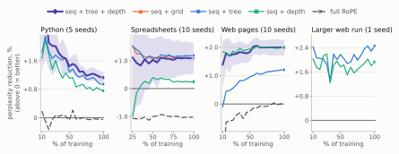
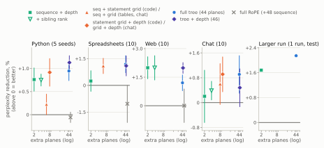
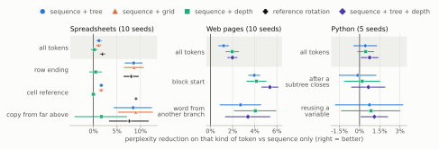
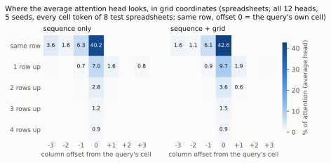

Appendix to “Depth Perception for Transformers: Telling Models How Deeply Each Token Is Nested”
Interactive appendix: setup, mechanism, every configuration and every seed
This page is the appendix to the short paper Depth Perception for Transformers: Telling Models How Deeply Each Token Is Nested. The paper's contribution is a depth marker: two of the rotary position embedding's planes rotated by each token's nesting depth — how many levels of its document's tree enclose it (the syntax tree of a program, the element tree of a web page, the Markdown of a chat message), not the network's layer count — beside unchanged sequence position. The supporting study asks the broader question behind it: does a transformer language model benefit from being told where each token sits in that tree in addition to where it sits in the sequence? It gives part of the planes to the full tree path, to grid coordinates and to references, and trains small language models from scratch.
The paper gives the headline. This page gives everything else: the full setup, the mechanism with every symbol defined, every configuration we trained, every seed, and the results that did not go our way. Every result number on this page is recomputed from the training logs when the page is built. Runs still training are marked as in progress.
The findings, in brief
- The recommendation: a depth marker, two planes. It is a strong, cheap version of the signal on code and prose, and on grid-shaped data one more small coordinate (row and column; on chat, the speaker and position in the message) carries the rest. On web pages with their markup in the token stream, where depth can be read from the text and so is available while generating, it lowers perplexity on the visible text by about 2.5% on all ten seeds; with the markup stripped, as in standard pretraining pipelines, depth must be supplied from the source, which suits reading but not writing free text (see Generation). Sequence + depth beats sequence alone on Python −0.0076 (won 5/5, p 0.001) and web pages −0.0202 (won 10/10, p < 0.0001); on spreadsheets it helps only inside formulas, −0.0025 (won 7/10, p 0.36) overall. There, sequence + grid — sheet, row and column on 6 planes — beats sequence only −0.0110 (won 10/10, p 0.0003) and ties the full 44-plane path (+0.0010 (won 4/10, p 0.37)). Adding the node's rank among its siblings to depth — sequence + depth + rank, a tree's analogue of row and column — adds nothing: +0.0001 (won 3/5, p 0.86) on Python and +0.0000 (won 5/10, p 0.99) on web pages against sequence + depth.
- Sequence + tree + depth is best or tied for best on Python, spreadsheets and web pages, at 46 planes. Against sequence only: Python 1.13% (5/5 seeds), Spreadsheets 1.09% (9/10), [[web pages]] 1.98% (10/10). The full path is what pays on spreadsheets and depth what pays on web text; together they win or tie against either alone.
- Adding tree position to sequence position helps in all four settings, on every seed. As a perplexity reduction on held-out text: Python 0.95% (5/5 seeds), Spreadsheets 1.19% (10/10), [[web pages]] 1.20% (10/10), and [[the larger web run]] 2.15% on its test split (one run, ahead at all 20 milestones).
- Replacing sequence position with tree position helps on code and hurts on prose. On Python, the tree with no sequence position beats sequence alone, −0.0041 (won 20/20, p < 0.0001). On the larger web run it is worse at all 20 milestones and +0.0168 nats per token worse on test.
- The gain lands on the tokens that depend on structure. On spreadsheets the end of a row improves several times more than the average token under the path or the grid, and on web pages the first token of a new text block improves about two to three times more than average (§ on where the gain lands).
- Whether the two signals should share a head depends on the corpus. On Python, all four ways of giving each signal its own layers lose to sequence + tree on every seed, and on the larger web run the layer split keeps about a third of the gain; on spreadsheets the layer split is better than sharing, −0.0073 (won 5/5, p 0.097).
- Pointing a reference at its target in angle helps where the text does not already spell the pointer out: on spreadsheets −0.0088 (won 9/10, p 0.004); on Python, where a variable's use and its definition carry the same name, +0.0015 (won 2/5, p 0.22).
These are small models (4.7 million and 31.5 million non-embedding parameters). We do not show that the effect survives at scale; we show it exists at this scale, on four kinds of document, and that it is the size such structural effects usually are.
1. How to read the numbers
The loss. Every number is validation nats per token: the average negative log-likelihood the model assigns to each token of a fixed set of 1,024 held-out records, at the run's final step. Lower is better.
The difference. Results are reported as Δ = configuration − baseline, in nats per token. Negative means the configuration is better. Every table names its baseline. Headline numbers are also given as a perplexity reduction, 100 × (1 − e^Δ), where positive means better: a Δ of −0.01 is about a 1% lower perplexity.
How big is big. The sequence-only baseline sits at 0.3456 nats per token on Python, 0.8408 on spreadsheets, 3.3142 on web pages and 2.5367 on the larger web run. The effects measured here are between about 0.002 and 0.025. For comparison, removing position altogether on Python costs +0.0297.
Why everything is paired. The final loss of one configuration varies from seed to seed with a standard deviation of 0.0032 on Python (20 seeds), 0.0087 on spreadsheets and 0.0124 on web pages — as large as the effects. So every configuration is trained at the same seeds as its baseline, and we analyse the paired differences, whose spread is far smaller (for sequence + tree against sequence only: 0.0017, 0.0067 and 0.0058 respectively).
The statistics. For each comparison we give the mean paired difference, its standard error, a paired t-test on the per-seed differences (n − 1 degrees of freedom, two-sided p), the 95% interval (mean ± t × standard error), and won k/n. Seed counts matter: if a configuration made no difference, winning 5 of 5 seeds would still happen with probability 0.0625 (two-sided), 10 of 10 with probability 0.002 and 20 of 20 with probability 0.000002. We treat 5 of 5 as suggestive, not conclusive, unless the t-test agrees.
The charts. Hover over, or tab to, any mark for its value. Every chart has a table view underneath with every number it plots. Hover over an underlined term for its definition.
2. Moved from the paper body
Appendix
Every number here is recomputed from the run logs by audit_paper_numbers.py, which reads this file alongside the paper. The interactive appendix at docs/index.html presents the same results with per-seed detail and per-seed markers.
Figure 3. Each configuration's gap to sequence only over training

Figure 3. Perplexity reduction against sequence only at every validation checkpoint (above 0 = better): mean over seeds of the paired gap; band, 95% CI for sequence + tree + depth. Each panel has its own scale; spreadsheets from 25% of training. On code the gain narrows as training proceeds; on web pages it holds or grows.
Figure 4. Gain against the number of extra planes

Figure 4. Perplexity reduction against sequence only (above 0 = better) against the number of extra rotary planes each configuration costs, log scale. Marker: mean over seeds of the paired gap; line: 95% CI; the larger web run is one run each, on its test split. Green: depth and depth with a label; orange: a grid (the statement grid on code; row and column on spreadsheets; exchange, speaker and position on chat), with depth where marked; blue: the full 44-plane tree; violet: tree + depth; grey: all 64 planes rotated by sequence. A cheap coordinate reaches the full tree in every setting; which one depends on the data. Every label-on-depth variant is in the interactive appendix.
Other findings (body §5.2)
Where the gain lands. Split by what is predicted, on the test split, the gain concentrates on structural tokens. On spreadsheets, the end of a row improves by 8.6% under sequence + tree and 8.6% under sequence + grid (10/10), against 1.2% and 1.1% on average; a value copied from the cell above across ≥ 256 tokens by 8.5% and 9.0%. On web pages, the first token of a new text block improves by 4.0–5.4% under every structured configuration (10/10), against 1.2–2.0% on average; full RoPE helps no kind of token. On Python, gains are spread evenly; the largest negative values, on tokens right after a subtree closes, are within noise. These are likelihoods, not task accuracy. Figure 5 breaks the gain down by kind of token.

Figure 5. Perplexity reduction against sequence only on selected kinds of token, test split (right = better); marker, mean over seeds; line, 95% CI; shaded row, all tokens. Each panel has its own scale. Every category, with per-seed markers, is in the interactive appendix.
Reference rotation improves on sequence + tree by 0.88% on spreadsheets (9/10, q < 0.05), by 0.39% when every address is also written out as text (7/10, q < 0.05), and not on Python (−0.15%, 2/5), whose renamed identifiers already make each reference a string match. On cell references themselves the gain is 9.1% against sequence only.
Adding versus replacing; one head versus separate layers. Replacing the sequence index with the tree helps on Python (tree only, 0.41%, 20/20, q < 0.05) but hurts on the larger web run (−1.70%, test), where there are 0.12 nodes per token. Splitting sequence and tree into separate layers is worse than sharing each head on Python (−0.22%, 0/5, q < 0.05) and suggestive of better on spreadsheets (0.73%, 5/5, p = 0.097). Learning curves, these splits and per-category tables are in the interactive appendix.
How the structure is used (body §5.2)
The models rely on the structure. Scoring the same test text with each record's coordinates shuffled among its own tokens costs far more than the structure gained, on every seed (5/5): sequence + grid on spreadsheets gains 1.4% but loses 29% when shuffled (12% when removed); sequence + depth on web pages gains 2.0% and loses 18% (5.4%). On Python, shuffling depth multiplies perplexity 7.5×: with no brackets or indentation in the stream, the model hands its nesting bookkeeping to the rotation. Removing the structure is out of distribution there, so shuffling is the cleaner test.
Attention moves where the gain lands (Figure 6). Averaged over all heads, the grid shifts attention onto earlier cells of the same column (14.2% → 18.5%, 5/5, q < 0.05) and onto the referenced cell (+0.55 points, 5/5, q < 0.05); depth on web pages shifts it onto text at the same depth elsewhere on the page (+1.8 points, 5/5, q < 0.05). On Python the shift is only suggestive (onto ancestor nodes, +0.5 points, 4/5, p = 0.062). Individual heads move 15–37 points in either direction, so heads are reassigned rather than nudged, and a sequence-only model also grows a column-reading head; the grid spreads that behaviour across more of the network. Full tables, and what switching the rotation off does to the attention scores, are in the interactive appendix.

Figure 6. Attention of the average head (all 12 heads, 5 seeds) from a spreadsheet cell to cells in the same row and in the rows above, by column offset, test split. The grid moves attention from cells to the left onto the same column in earlier rows.
Table 1. The five settings
| Python | Spreadsheets | Web | the larger web run | Chat | |
|---|---|---|---|---|---|
| corpus | 423,111 programs | 41,245 workbooks | 899,382 web pages | 17.19 M web pages | 295,386 conversations |
| tokens | 47.1 M | 43.3 M | 896 M | 25.4 B | 212 M |
| tree | syntax tree | sheet → row → column → cell contents | DOM of visible text (markup stripped) | DOM of visible text (markup stripped) | exchange → speaker → Markdown |
| tree nodes per token | 0.86 | 0.56 | 0.13 | 0.12 | 0.03 |
| layers / heads / width | 6 / 2 / 256 | 6 / 2 / 256 | 6 / 2 / 256 | 10 / 4 / 512 | 6 / 2 / 256 |
| non-embedding parameters | 4.7 M | 4.7 M | 4.7 M | 31.5 M | 4.7 M |
| context (tokens) | 1,024 | 4,096 | 2,048 | 4,096 | 2,048 |
| training | 11,200 steps, 8 epochs | 8,240 steps, 8 epochs | 9,375 steps, ⅓ epoch | 537,000 steps, 1 epoch | 13,100 steps, 1.4 epochs |
| seeds per configuration | 5 (20 for tree only and sequence only) | 10 | 10 | 1 | 10 |
Table 1. The five settings.
Depth dropout, in full
Withholding depth on part of the training data. Training web pages with depth dropped on a random 30% of records — the coordinate absent there, contributing no rotation — keeps most of the reading gain and removes the harm when depth is missing. With depth supplied it gains 1.49% (9/10, q < 0.05) against sequence only, where plain depth gains 2.00% (10/10, q < 0.05); without it, −0.42% (4/10, n.s.), where a model trained with depth always present is 3.30% worse than sequence position alone (0/10). At 50% dropout the pair is 1.23% (9/10, q < 0.05) and −0.07% (5/10, n.s.). One model can therefore serve both regimes: read structured documents with the marker, generate free text without it. Use depth where the structure is in the text or available at inference; where it may be missing, withhold it on part of the training data.
Run-to-run noise and the Python splits (body §4, §5.1)
The noise floor. GPU training here is not bit-reproducible: replicate runs of one configuration at one seed are identical at step 0 and diverge thereafter through floating-point reduction order. Three replicate runs of one configuration at one seed on web pages spread 0.0023 nats at the final step against 0.0109 across the ten published seeds — 21% of the spread the pairing removes, and 11% of the depth effect measured against it.
Why Python's two splits disagree. Python's test split shows smaller gains for every configuration (sequence only scores 0.43 nats/token there against 0.35 on validation). The splits are contiguous record ranges over an unshuffled corpus: mean record length is 108.5 tokens in train, 127.9 in validation and 117.9 in test, and the subsets actually scored are 130.0 and 114.5. Validation is also easier than the training data: at the end of training, loss is 0.536 on training batches against 0.348 on the validation set. The body therefore reads the test column as the less idiosyncratic of the two and treats the Python effect as uncertain.
The two-corpus precursor (body §5.4)
An earlier two-corpus version of the four-corpus experiment, superseded by it and reported here for completeness.
A two-corpus precursor (web pages and spreadsheets, five seeds, test split) found the same split of preferences: depth 2.86% (5/5, q < 0.05) on web against the grid's −0.26% (2/5, n.s.) there, and the grid 1.35% (5/5, q < 0.05) on spreadsheets. It also found that two corpora writing different meanings into one plane group cost nothing against giving each its own, 0.02% (3/5, n.s.). Full tables for both cells follow below.
Published orderings for the injection site (body §6)
GRAPE's own experiments (Zhang, Y. et al., 2026) favour the additive site: 51.73 average accuracy for RoPE against 52.87 for ALiBi and 53.25 for its additive variant at 353M parameters. PaTH's (Yang et al., 2025) favour the multiplicative: 19.01 perplexity against 18.03 for its own and 18.33 for an additive data-dependent logit term. Neither holds the injected coordinate fixed while varying the route.
3. Glossary
Every term below is linked wherever it appears; hover for the definition, click to come here.
- setting
- One corpus trained at one model size, context length and training length. Configurations are compared only within a setting; loss values from different settings are never compared directly, because their token streams differ.
- configuration
- One way of filling the rotary planes with position information (for example sequence only, or sequence + tree). Within a setting, configurations differ in nothing else.
- Python
- Setting: 423,111 Python programs written as a compact pre-order serialisation of their syntax tree; 4.7M-parameter model, 1,024-token context, about eight passes; 5 to 20 seeds per configuration.
- Spreadsheets
- Setting: 41,245 spreadsheet workbooks written out cell by cell; 4.7M-parameter model, 4,096-token context, about eight passes; 10 seeds per configuration.
- web pages
- Setting: Web pages (visible text only), whole pages of at most 2,048 tokens; 4.7M-parameter model, a third of a pass; 10 seeds per configuration. The small, many-seed web setting.
- the larger web run
- Setting: Web pages (visible text only) at a 4,096-token context; 31.5M-parameter model, one full pass over 25.4 billion tokens; one seed per configuration. The large web setting.
- seed
- A random seed fixes the initial weights and the order of training batches. Two configurations trained at the same seed start from identical weights and see identical batches, so they differ only in the position signal.
- paired difference
- For one seed, the configuration's loss minus the baseline's loss at the same step. Comparing per seed removes the seed-to-seed variation both runs share.
- Δ
- Configuration loss minus baseline loss, in validation nats per token, at the final step. Negative means the configuration is better. The baseline is always named.
- won k/n
- The number of seeds, out of n, on which the configuration's loss is lower than the baseline's.
- nats per token
- Average negative log-likelihood of each held-out token under the model, using the natural logarithm. Lower is better. Perplexity is e raised to this value.
- perplexity reduction
- 100 × (1 − e^Δ): how much lower, in percent, the configuration's perplexity is than the baseline's. A Δ of −0.01 nats per token is about a 1% perplexity reduction. Positive means better.
- milestone
- A validation score taken every 5% of a run's planned steps, so a full run has 20. Configurations are compared only at milestones both runs have reached.
- pass
- One epoch: the number of steps it takes to show the model every training record once.
- held-out split
- Records never trained on. The validation split is scored at every milestone (a fixed set of 1,024 records); the test split is scored once, at the final step, as an independent check.
- tree
- The structure a document was generated from: the syntax tree of a program, the sheet / row / cell structure of a workbook, or the element tree (DOM) of a web page.
- node
- One element of the tree: a syntax-tree node, a spreadsheet cell or formula part, an HTML element or a run of text. Each token is assigned to one node.
- path
- The list of sibling ranks from the root of the tree down to a token's node — one number per level. Two nodes have the same path only if they are the same node.
- sibling rank
- A node's position among its parent's children, counting from 0 in document order. (On spreadsheets the row and column levels use the absolute row and column index instead, because empty rows are skipped in the data.)
- level
- Distance from the root: level 1 is a child of the root, level 2 a grandchild, and so on. Up to 22 levels are encoded.
- depth
- The number of levels a token's node sits below the root — one integer per token.
- within-node index
- A token's position inside its own node: 0 for the node's first token, 1 for the next. It restarts at every node, so it is a local copy of sequence position.
- nodes per token
- Tree nodes divided by tokens in a corpus: how much structure each token carries. About 0.86 for Python, 0.56 for spreadsheets and 0.13 for web text.
- interior node
- A node that has tokens of its own AND a descendant that also has tokens. Depth can recover the tree only if every ancestor is interior in this sense.
- pre-order serialisation
- Writing a tree out parent first, then each child's subtree in order (depth-first). All three corpora are written this way.
- render
- How a spreadsheet is written as text. The values render writes only each cell's content; the addressed render writes 'address:content' (e.g. G4:=E4+F4). Tabs separate cells, newlines rows.
- reference
- A formula operand that names another cell, such as E4 in =E4+F4; in Python, a use of a variable that names its definition.
- plane
- One two-dimensional rotary subspace: two of a head's dimensions rotated together by one angle. A 128-wide attention head has 64 planes.
- unrotated plane
- A plane given angle 0 everywhere. It carries no position and acts as an ordinary content channel.
- fast and slow plane
- Each tree level has two planes. At initialisation the fast plane turns 0.316 rad per sibling (adjacent siblings stay distinguishable) and the slow plane 1/16 of that, so it can count about 318 siblings before its angle wraps round. Both rates are learned.
- wrap
- When a plane's angle passes 2π it repeats, so two different ranks become indistinguishable on that plane.
- co-location
- Both position signals inside the same attention head, so a single attention score can depend on sequence distance and tree position at once.
- sequence surrogate
- A signal that stands in for sequence position. The within-node index is one: it counts tokens in reading order.
- plane-matched control
- A configuration with exactly the same number of rotating planes and learned parameters as another, but spending them on a different signal. Used to tell 'the signal helps' from 'extra planes help'.
- sequence only
- Configuration: 16 planes rotate by the token's index in the sequence (standard partial rotary embedding); every other plane is unrotated. The usual baseline.
- tree only
- Configuration: the 44 tree planes rotate by the token's path; the sequence planes are unrotated, so the model is never told token order directly.
- tree + within-node index
- Configuration: the 44 tree planes plus 4 planes for the within-node index; no sequence position.
- sequence + tree
- Configuration: 16 sequence planes plus the 44 tree planes, inside every head. The main structural configuration.
- all signals
- Configuration: sequence + tree + within-node index (16 + 44 + 4 = all 64 planes).
- sequence + depth
- Configuration: 16 sequence planes plus 2 planes rotated by the token's depth; the other 46 planes unrotated. No per-level path at all.
- top-level-only control
- Configuration: 16 sequence planes plus 2 planes rotated by level 1 of the path only (which child of the root the token descends from). The plane-matched control for sequence + depth.
- no position
- Configuration: no plane rotates. The model gets no positional information except what causal masking implies.
- sequence + grid
- Spreadsheet configuration: sequence position on 16 planes plus the first three levels of the path — sheet, row and column numbers — on 6 planes; the formula-nesting levels below the cell are not rotated.
- sequence + depth + rank
- Configuration for nested documents: sequence position on 16 planes plus two numbers per token on 2 planes each — its node's depth and the node's rank among its parent's children, the tree's analogue of a spreadsheet's row and column. Run on Python and web pages.
- full RoPE
- Control configuration: all 64 planes rotate by the token's index in the sequence, as in standard RoPE (the baseline rotates 16). It checks that the structured configurations do not win merely by rotating more planes.
- sequence + tree + depth
- Configuration: sequence + tree plus 2 planes rotated by depth (62 of 64 planes). Best or tied overall; the paper's recommendation is the cheaper sequence + depth. On the depth planes a parent and its child always differ by exactly one learned step, so 'is the parent of' is a constant offset.
- layer split
- Configuration family: each layer carries ONE signal at full width — sequence layers rotate all 64 planes by sequence position, tree layers rotate 44 tree + 4 within-node planes. Written as one letter per layer (s sequence, t tree, n no rotation): e.g. ststst.
- head split
- Configuration: in every layer, half the heads carry sequence position at full width and the other half the tree (+ within-node index) at full width. No single head sees both.
- reference rotation
- Configuration: sequence + tree, except that a token belonging to a reference takes the coordinates of the thing it refers to on the relevant tree planes, so a reference and its target line up in angle.
- directed-offset variant
- Reference rotation where the reference sits a learned constant angle away from its target instead of exactly on it, so 'refers to' differs from 'is next to'. The constant starts at 0.
4. Setup
The four settings
| Python | Spreadsheets | [[web pages]] | [[the larger web run]] | |
|---|---|---|---|---|
| corpus | Python programs (APPS and KodCode), whole files | spreadsheet workbooks (Sheetpedia corpus), whole workbooks | English web pages (C4 with HTML), visible text only | English web pages (C4 with HTML), visible text only |
| documents: train / validation / test | 338,489 / 42,311 / 42,311 | 32,997 / 4,124 / 4,124 | 895,286 / 2,048 / 2,048 | 17,181,211 / 2,048 / 2,048 |
| tokens in the corpus | 47.1 M | 43.3 M | 895.7 M | 25.43 B |
| mean tokens per document | 111 | 1,050 | 996 | 1,480 |
| tokenizer, vocabulary | BPE trained on the serialised trees, 32,768 | GPT-2, 50,257 (padded to 50,304) | GPT-2, 50,257 (padded to 50,304) | GPT-2, 50,257 (padded to 50,304) |
| nodes per token | 0.86 | 0.56 | 0.13 | 0.13 |
| context length (tokens) | 1,024 | 4,096 | 2,048 | 4,096 |
| documents longer than the context | none longer than the context | dropped whole | dropped whole | cropped to the first 4,096 tokens |
| layers / heads / width | 6 / 2 / 256 | 6 / 2 / 256 | 6 / 2 / 256 | 10 / 4 / 512 |
| head width (planes per head) | 128 (64) | 128 (64) | 128 (64) | 128 (64) |
| non-embedding parameters | 4.7 M | 4.7 M | 4.7 M | 31.5 M |
| documents per step | 256 | 32 | 32 | 32 |
| tokens per step (approx.) | 28.5 k | 33.6 k | 31.9 k | 47.4 k |
| steps | 11,200 | 8,240 | 9,375 | 537,000 |
| passes over the training split | 8.47 | 7.99 | 0.34 | 1.00 |
| peak learning rate | 0.0012 | 0.0012 | 0.0012 | 0.0006 |
| warm-up steps (2%) | 224 | 165 | 188 | 10,740 |
| seeds per configuration | 5 (20 for sequence only and tree + within-node index) | 10 | 10 | 1 |
| wall-clock per run, one RTX A4000 | about 2 h | about 1.5 h | about 0.7 h | about 180 h |
Only configurations within one setting are compared. The two web settings answer the same question at different cost: The larger web run at a realistic context and model size, which buys one seed per configuration; Web pages ten times over, on whole pages, for a fraction of one the larger web run run. Their losses are on different scales and are never compared directly; only the direction and stability of the effects are compared.
How each corpus becomes a tree
Python. Programs are parsed with Python's own syntax-tree parser and written out as a compact pre-order serialisation of the syntax tree: a reversible text form (all 423,111 programs convert back to the original byte for byte). Local variable names are rewritten by order of definition (x0, x1, …), so every use of a variable carries exactly the same name as its definition. A byte-pair tokenizer with 32,768 entries is trained on this serialisation. Each token belongs to the syntax-tree node that emits it, and its path is the list of sibling ranks from the root down to that node. Typical sibling ranks are small (99th percentile 7, maximum 151). 656 nodes (0.002%) sit deeper than the 22 encoded levels; nothing is dropped.
Spreadsheets. Each workbook is a tree: workbook → sheet → row → cell → the cell's content, which is either a literal value or a formula's expression tree (operators, function calls, references). The path's first three levels are the sheet's index, the absolute row index and the absolute column index (0-based) rather than sibling ranks, because empty rows and cells are not stored and counting siblings would misnumber them; deeper levels are sibling ranks inside the formula. A token belongs to the deepest node that produced its first character; the tab and newline separators belong to no node. Two renders of the same workbooks are used; the table after this section shows one row of a timesheet in each.
In the values render a cell's own address is never written: the grid position reaches the model only through the rotation. References inside formulas (the E4 and F4 of =E4+F4) are written in both renders. For the tokens of =E4+F4 in cell G4 of the first sheet, the path begins (sheet 0, row 3, column 6) and continues with the token's place inside the formula. 3,031,723 references occur in the corpus; 2,991,629 name a cell in the same workbook and 40,094 name a defined name rather than a cell.
Web text. Pages come from the English C4 crawl with its original HTML. The HTML is parsed into its element tree, skipping head, script, style, svg, iframe, noscript and template. Nodes are the remaining elements and every text run containing a non-space character; paths start at the children of body, and a rank counts the parent's retained children. Only the visible text is written into the token stream; all markup is removed, so document structure reaches the model only through the rotation. A token belongs to the text node containing its first non-space byte. Because only text emits tokens, every token-carrying node is a leaf of the element tree.
| render | how one row is written (⇥ = tab) |
|---|---|
| values | 2022-05-01 00:00:00 ⇥ 05:00:00 ⇥ 16:00:00 ⇥ … ⇥ =E4+F4 |
| addressed | B4:2022-05-01 00:00:00 ⇥ C4:05:00:00 ⇥ D4:16:00:00 ⇥ … ⇥ G4:=E4+F4 |
What is excluded
| setting | excluded or altered | share |
|---|---|---|
| Python | nothing excluded; no program is longer than the context | 0% |
| Spreadsheets | workbooks longer than 4,096 tokens in either render, dropped whole (23,055 of 66,015) | 34.9% |
| workbooks nested deeper than 22 levels, dropped (1,715) | 2.6% | |
| [[the larger web run]] | pages nested deeper than 22 levels, dropped (of 19.40 M pages read) | 9.9% |
| pages with a sibling rank above 318 (the slow plane would wrap), dropped | 1.4% | |
| remaining pages longer than 4,096 tokens, cropped to their first 4,096 | 5.8% | |
| … which discards this share of all text tokens | 11.4% | |
| [[web pages]] | pages nested deeper than 22 levels, dropped (of 1,310,720 pages read) | 9.8% |
| pages with a sibling rank above 318, dropped | 0.07% | |
| pages with no body or under 64 text tokens, dropped | 0.06% | |
| pages longer than 2,048 tokens, dropped whole — none cropped (280,736, which is 23.8% of otherwise-eligible pages) | 21.4% |
Two different things happen to over-long web pages. The larger web run crops them, keeping the first 4,096 tokens; Web pages drops them, so every web pages page is seen whole. Separately, both web settings drop pages whose tree is deeper than the 22 encoded levels or wider than 318 siblings at some level, so that no path is cut short or wraps round.
Model, training and evaluation
Model. A decoder-only transformer in the GPT-2 style: pre-layer-norm blocks, a GELU MLP four times the width, no bias terms, no dropout, input and output embeddings tied. The only change is the position signal: no learned position embedding, and rotary embedding applied to queries and keys in every head, with the angles described in the mechanism section.
Optimisation. AdamW (β₁ 0.9, β₂ 0.95), weight decay 0.1 on weight matrices — the rotary rate and offset parameters are excluded from weight decay — gradient clipping at 1.0, bfloat16 autocast. The learning rate rises linearly over the first 2% of steps, then follows a cosine to 10% of its peak at the final step.
Batches. Every step trains on a fixed number of whole documents. Documents are grouped by length into micro-batches of at most 8,192 padded tokens and gradients are accumulated across the micro-batches of a step. No document is split across steps.
Learning rates. One peak rate per setting, used for every configuration in it:
- Python: a sweep of five rates (0.0003 to 0.0048, 560 steps each) on four configurations — sequence only, tree only, tree + within-node index and sequence + tree. All four were best at 0.0012.
- [[web pages]]: a sweep of three rates (600 steps) on sequence + tree; 0.0012 was best.
- Spreadsheets: 0.0012, carried over from a sweep on an earlier build of the spreadsheet corpus with a shorter context, not re-swept for this one.
- [[the larger web run]]: 0.0006, from a sweep on an earlier build of the web corpus. The exception is no position, which diverged at 0.0006 and 0.0003 in preliminary runs and was run at 0.00015 — where it diverged again.
Evaluation. Validation loss is scored every 5% of a run's planned steps (a milestone) on the same 1,024 validation documents. Results use the final step: no checkpoint is selected by its score. The single exception is the the larger web run tree-only run, which diverged and is reported at its best milestone, labelled as such. As an independent check, final checkpoints are also scored on the test split: 8,192 test documents for Python (and 2,048 in an earlier pass over six seeds), 2,048 for the larger web run.
Compilation. Runs use PyTorch's compiler except every web pages run (documents of many different lengths would trigger a recompilation per batch shape) and the the larger web run head-split run (it failed under compilation at four heads). Compilation does not change the arithmetic in principle but is not a bit-identical path, so the the larger web run head-split run is not configured exactly like its comparators.
5. Mechanism
Rotary position embedding in one paragraph. In each attention head, the query and key vectors are cut into pairs of dimensions, and each pair — a plane — is rotated by an angle that depends on the token's position. When the attention score between two tokens is computed, the rotations combine so that each plane contributes a term depending only on the difference between the two tokens' angles. Standard rotary embedding makes every angle a multiple of the token's index in the sequence, at a range of frequencies. Nothing requires that: the angle of any plane can be a function of any coordinate, and the score will then depend on the difference in that coordinate. We give some planes to the token's position in the tree.
Each row is a configuration and each small block one plane; colour says what the plane's angle is computed from. Hover over (or tab to) a block for its formula. The last two rows are the per-layer or per-head allocations used by the layer split and head split, in which each layer or head carries one signal at full width. Grey planes are unrotated plane.
Table view
| configuration | sequence | tree path | within-node index | depth | unrotated |
|---|---|---|---|---|---|
| sequence only | 16 | 0 | 0 | 0 | 48 |
| tree only | 0 | 44 | 0 | 0 | 20 |
| tree + within-node index | 0 | 44 | 4 | 0 | 16 |
| sequence + tree | 16 | 44 | 0 | 0 | 4 |
| all signals | 16 | 44 | 4 | 0 | 0 |
| sequence + depth | 16 | 0 | 0 | 2 | 46 |
| top-level-only control | 16 | 2 | 0 | 0 | 46 |
| sequence + tree + depth | 16 | 44 | 0 | 2 | 2 |
| no position | 0 | 0 | 0 | 0 | 64 |
| split: a sequence layer or head | 64 | 0 | 0 | 0 | 0 |
| split: a tree layer or head | 0 | 44 | 4 | 0 | 16 |
The angles. A head of width 128 has 64 planes, numbered here 1 to 64 (plane i rotates dimensions i and i + 64). In every configuration that keeps all signals in each head, the same planes always carry the same signal; a configuration only decides which groups rotate.
- Sequence planes 1–16. Plane i (i = 0 … 15) has angle t × 10000^(−i/16), where t is the token's index in its document. This is the standard rotary spectrum over 16 planes, the partial-rotary arrangement used by GPT-NeoX.
- Tree planes 17–60: 22 levels × 2 planes. For tree level k (1 to 22) and plane p ∈ {fast, slow}, the angle is present_k × θ_k,p + r_k × s_k,p. Here r_k is the sibling rank of the token's ancestor at level k; present_k is 1 if the token's node reaches level k and 0 otherwise; θ_k,p (an offset) and s_k,p (a rate) are learned. Levels a node does not reach contribute angle 0.
- Within-node planes 61–64. Angle = present × θ_p + w × s_p, where w is the token's index inside its own node and θ_p, s_p are learned.
- Depth planes (2, in the depth configurations). Angle = d × s_p, where d is the token's depth (the number of levels its node reaches) and s_p is learned. There is no offset: every token has a depth.
Initial values. All offsets θ start at exactly 0. Each tree level's fast plane starts with a rate of √(2 × (1 − 0.95)) ≈ 0.316 radians per sibling — chosen so that adjacent siblings have a cosine similarity of 0.95 on that plane — and its slow plane with 1/16 of that, so the slow plane counts up to about 318 siblings before its angle wraps round and the fast plane about 20. The four within-node planes start at 0.316 / 4^p (p = 0 … 3), wrapping after about 20, 80, 318 and 1,270 tokens; the two depth planes at 0.316 and 0.316 / 16. All rates and offsets are then learned.
Properties that matter for the comparisons.
- Identical networks at a given seed. The rotary parameters are initialised to fixed values, not drawn at random, so two configurations at the same seed start with identical weights everywhere else and see identical batches.
- No look-ahead. A rank counts earlier siblings only, and a token's node and path depend only on the document up to that token.
- Which plane carries which signal is arbitrary. For a model trained from scratch, permuting the planes is the same as permuting rows of the query and key weight matrices, so only the set of (coordinate, rate) pairs matters, not where in the head they sit.
Tokens A and B sit in different paragraphs of one section; C sits in the next section at the same depth. Each dial is one plane group's rotation (angles exaggerated). Under sequence + tree, B differs from A on the paragraph level and C on the section level. Under sequence + depth all three are at depth 3, so the score sees only how far apart they are; the branch can still be inferred, since a token's parent is the nearest earlier token one level shallower, but only where ancestors are themselves tokens (bottom): true of our Python corpus, not of web text, whose stream holds only the visible text. The path costs 44 planes; depth costs 2. That depth nonetheless beats the path on web text means it helps as a feature of where text sits, not by rebuilding the tree.
Table view
| note |
|---|
| schematic, not data |
Cell A3 holds =A1+A2. Its token "A1" (F) belongs to A3, so under sequence + tree it differs from the cell it names (R) on the row level. Under reference rotation it takes A1's coordinates and matches R on every level. Angles exaggerated.
Table view
| note |
|---|
| schematic, not data |
The configurations beyond the plane allocation
Sequence + depth and its control. Two planes carry the token's depth and nothing else of the tree. Its plane-matched control, the top-level-only configuration, has exactly the same 16 + 2 rotating planes and the same two learned rates, but spends them on level 1 of the path (which child of the root the token descends from) instead of on depth.
Depth and the tree. In a pre-order serialisation, a node's parent is the nearest preceding node one level shallower, so the sequence order plus every token's depth determines the tree exactly — provided every ancestor appears in the token stream. On Python this holds and was checked directly: reconstructing every node's parent from order and depth alone recovered 558,271 parents with no error. On web text it cannot hold: only text nodes emit tokens, so no ancestor of a token-carrying node is ever in the stream.
Sequence + tree + depth. Sequence + tree plus the two depth planes. Because depth goes up by exactly one from parent to child, on those planes a parent and its child always differ by exactly one learned step, with a sign: the relation "is the parent of" becomes a constant angular offset, and a grandparent is two steps away.
Reference rotation on spreadsheets. A token that is part of a reference (the E4 in =E4+F4) has its sheet, row and column levels replaced by those of the cell it names; its deeper levels, its place inside the formula, are kept. A reference and the cell it names then have identical angles on those planes, exactly as two tokens of one cell do. It rotates the same planes as sequence + tree, which is its baseline, on the same data and seeds. The coordinate is computed from the reference's own text, so it uses no future information even when the named cell comes later in the workbook. 17.25% of references point to another sheet, which is why the sheet level is replaced too.
Reference rotation on Python. A use of a variable takes the path of the variable's definition for the levels the definition occupies, and keeps its own path below that, so path length is unchanged. 20.6% of tokens are affected; every definition precedes its uses. Baseline: sequence + tree.
Variants of reference rotation, reported with the results:
- Whole-path overwrite (Python): a use takes its definition's entire path. Definitions sit shallower than uses, so 91.7% of the overwritten paths become shorter, losing 3.13 levels on average.
- Directed offset (spreadsheets): the reference sits a learned constant angle away from its target rather than exactly on it, so "refers to" is distinguishable from "is in the same cell", with a direction. The constant starts at 0, so the variant starts identical to plain reference rotation.
- Own plane group (spreadsheets, an earlier build): references rotate a separate group of planes rather than the tree planes.
- Symbol identity (Python): two planes rotated by the order in which each variable is first mentioned, so all mentions of one variable coincide.
Layer splits and the head split. Instead of sharing every head, each signal gets whole layers or whole heads at full width: a sequence layer rotates all 64 planes by sequence position (frequencies 10000^(−i/64)), and a tree layer rotates 44 tree planes plus the 4 within-node planes, leaving 16 unrotated. On Python's six layers four patterns are trained, written one letter per layer (s sequence, t tree, n no rotation): alternating ststst, sequence-first sssttt, tree-first tttsss and thirds ssttnn. On the larger web run (ten layers) and spreadsheets the layer split is alternating. The head split gives half the heads of every layer the sequence and the other half the tree: one head each in Python's two-head model, two each in the larger web run's four-head model.
6. Results
6.1 Gain against cost: a few planes reach the full tree
Perplexity reduction against sequence only against the extra planes each configuration costs (log scale); marker, mean over seeds of the paired gap; line, 95% interval. The larger web run is one run each, on its test split. Green: depth and depth with a label (sibling rank, parent tag, parent/child IDs); orange: a grid (the statement grid on code; row and column on spreadsheets; exchange, speaker and position on chat), with depth where marked; blue: the full tree; violet: tree + depth; grey: full RoPE.
Table view
| note |
|---|
| numbers in the sections that follow |
Reading. In every setting a configuration of 2–10 planes reaches the 44-plane tree. Which one depends on what the data's structure varies on: depth on nested text (web pages), a grid on tables (row, column) and chat (speaker, position in the message, with depth), depth with a statement grid on code. Adding a label to depth that only marks siblings or a parent never helps.
6.2 Sequence + tree + depth: best or tied on Python, spreadsheets and web pages
Each dot is one seed, paired with sequence only at the same seed; right of zero is better. The path pays on spreadsheets, depth on web text, and sequence + tree + depth keeps whichever pays.
Table view
| n | mean % reduction | 95% interval | won | p | per seed (seed: value) | |
|---|---|---|---|---|---|---|
| Python: sequence + tree — 5 seeds | 5 | 0.95% | 0.74% to 1.15% | 5/5 | 0.0002 | 0: 0.91%, 1: 0.94%, 2: 0.69%, 3: 1.12%, 4: 1.07% |
| Python: sequence + depth — 5 seeds | 5 | 0.76% | 0.51% to 1.01% | 5/5 | 0.001 | 0: 0.72%, 1: 0.78%, 2: 0.74%, 3: 1.06%, 4: 0.49% |
| Python: sequence + tree + depth — 5 seeds | 5 | 1.13% | 0.98% to 1.28% | 5/5 | < 0.0001 | 0: 0.92%, 1: 1.22%, 2: 1.16%, 3: 1.18%, 4: 1.16% |
| Spreadsheets: sequence + tree — 10 seeds | 10 | 1.19% | 0.71% to 1.66% | 10/10 | 0.0003 | 0: 0.95%, 1: 2.12%, 2: 0.18%, 3: 1.86%, 4: 1.18%, 5: 1.01%, 6: 1.59%, 7: 0.16%, 8: 1.75%, 9: 1.06% |
| Spreadsheets: sequence + depth — 10 seeds | 10 | 0.25% | −0.33% to 0.82% | 7/10 | 0.36 | 0: 0.79%, 1: 0.98%, 2: −0.10%, 3: 1.78%, 4: 0.04%, 5: −1.09%, 6: 0.25%, 7: 0.03%, 8: 0.30%, 9: −0.57% |
| Spreadsheets: sequence + tree + depth — 10 seeds | 10 | 1.09% | 0.53% to 1.65% | 9/10 | 0.002 | 0: 0.97%, 1: 1.99%, 2: −0.37%, 3: 1.95%, 4: 1.14%, 5: 0.83%, 6: 1.13%, 7: 0.01%, 8: 1.66%, 9: 1.59% |
| web pages: sequence + tree — 10 seeds | 10 | 1.20% | 0.79% to 1.62% | 10/10 | 0.0001 | 0: 0.95%, 1: 0.90%, 2: 0.80%, 3: 1.75%, 4: 1.13%, 5: 0.36%, 6: 2.00%, 7: 2.05%, 8: 0.68%, 9: 1.41% |
| web pages: sequence + depth — 10 seeds | 10 | 2.00% | 1.42% to 2.57% | 10/10 | < 0.0001 | 0: 3.43%, 1: 2.13%, 2: 1.26%, 3: 1.79%, 4: 1.47%, 5: 0.88%, 6: 2.75%, 7: 2.51%, 8: 2.47%, 9: 1.23% |
| web pages: sequence + tree + depth — 10 seeds | 10 | 1.98% | 1.70% to 2.26% | 10/10 | < 0.0001 | 0: 2.41%, 1: 2.07%, 2: 2.12%, 3: 1.90%, 4: 1.52%, 5: 1.47%, 6: 2.03%, 7: 2.64%, 8: 1.51%, 9: 2.17% |
Sequence + tree + depth minus each baseline, validation nats/token, final step (won = seeds where sequence + tree + depth is better):
| setting | vs sequence only | vs sequence + tree | vs sequence + depth |
|---|---|---|---|
| Python | −0.0113 (won 5/5, p < 0.0001) | −0.0018 (won 5/5, p 0.095) | −0.0037 (won 5/5, p 0.019) |
| Spreadsheets | −0.0110 (won 9/10, p 0.002) | +0.0010 (won 3/10, p 0.34) | −0.0085 (won 8/10, p 0.010) |
| [[web pages]] | −0.0200 (won 10/10, p < 0.0001) | −0.0079 (won 10/10, p 0.0007) | +0.0001 (won 6/10, p 0.96) |
It is the one structured configuration that is best or tied for best in every setting. Each simpler part fails somewhere: sequence + depth barely helps on spreadsheets, and sequence + tree loses to sequence + depth on web text. It ties sequence + tree on spreadsheets and sequence + depth on web pages, and its edge over sequence + tree on Python is consistent but not significant at five seeds.
It is not the best spreadsheet result. Reference rotation beats it there (+0.0098 (won 1/10, p 0.005) for sequence + tree + depth against reference rotation), and so does a layer split (+0.0085 (won 0/5, p 0.077)). Combining depth with either is untested. The larger web run has no sequence + tree + depth run.
6.3 Over training, in every setting
Each chart is drawn in your browser from the numbers embedded in this page, computed from the training logs at every validation milestone (every 5% of training). Gap view (default): each configuration's perplexity reduction against sequence only at the same seed and step, 100·(1 − e^Δ); above zero is better, the line is the mean over paired seeds and the band its 95% confidence interval. Raw view: validation loss in nats per token, mean over seeds, the band the seed range. Only seeds that finished their run are drawn. Click a configuration to hide or show it; hover (or focus the plot and use the arrow keys) to read every visible configuration at one milestone. Sequence + depth, the paper's recommendation, is the heavy line. No position and tree only start hidden (they sit far below the rest); their buttons turn them on.
Table view
Perplexity reduction against sequence only (mean over paired seeds; positive = better)
| % of training | sequence + depth (n=5) | sequence + depth + rank (n=5) | statement grid (n=5) | statement grid + depth (n=5) | sequence + tree (n=5) | sequence + tree + depth (n=5) | full RoPE (control) (n=5) | tree only (no sequence index) (n=20) | no position (n=5) |
|---|---|---|---|---|---|---|---|---|---|
| 5% | +2.80% | +3.15% | +0.80% | +3.29% | +1.53% | +3.73% | +0.05% | -11.18% | -38.96% |
| 10% | +1.66% | +2.33% | +0.68% | +2.36% | +1.83% | +2.48% | +0.18% | -4.34% | -25.00% |
| 15% | +2.18% | +2.36% | +1.01% | +2.62% | +2.28% | +3.00% | -0.09% | -1.68% | -18.27% |
| 20% | +1.78% | +1.83% | +0.57% | +2.02% | +1.87% | +2.10% | -0.33% | -0.73% | -13.51% |
| 25% | +1.36% | +1.83% | +0.80% | +1.91% | +1.66% | +2.02% | -0.06% | -0.35% | -11.04% |
| 30% | +1.60% | +1.60% | +0.55% | +1.98% | +1.76% | +2.01% | +0.07% | +0.03% | -8.79% |
| 35% | +1.31% | +1.49% | +0.45% | +1.73% | +1.67% | +1.81% | +0.04% | +0.19% | -7.34% |
| 40% | +1.11% | +1.49% | +0.46% | +1.60% | +1.63% | +1.70% | +0.08% | +0.21% | -6.38% |
| 45% | +1.26% | +1.26% | +0.49% | +1.50% | +1.67% | +1.66% | +0.04% | +0.37% | -5.83% |
| 50% | +1.11% | +1.08% | +0.39% | +1.25% | +1.28% | +1.44% | -0.07% | +0.42% | -5.19% |
| 55% | +1.13% | +1.18% | +0.47% | +1.43% | +1.37% | +1.51% | +0.21% | +0.45% | -4.90% |
| 60% | +0.86% | +0.90% | +0.10% | +1.17% | +1.20% | +1.45% | -0.04% | +0.39% | -4.48% |
| 65% | +0.91% | +0.99% | +0.16% | +1.14% | +1.14% | +1.29% | -0.03% | +0.44% | -4.12% |
| 70% | +0.94% | +1.00% | +0.35% | +1.16% | +1.19% | +1.30% | +0.00% | +0.42% | -3.70% |
| 75% | +0.82% | +0.77% | +0.16% | +0.97% | +1.08% | +1.18% | -0.04% | +0.46% | -3.61% |
| 80% | +0.85% | +0.81% | +0.25% | +1.01% | +1.09% | +1.21% | -0.05% | +0.38% | -3.41% |
| 85% | +0.77% | +0.81% | +0.30% | +1.03% | +1.13% | +1.24% | -0.03% | +0.41% | -3.25% |
| 90% | +0.85% | +0.79% | +0.26% | +1.00% | +1.03% | +1.19% | -0.04% | +0.41% | -3.05% |
| 95% | +0.79% | +0.75% | +0.25% | +0.96% | +0.95% | +1.14% | -0.04% | +0.42% | -2.99% |
| 100% | +0.76% | +0.75% | +0.22% | +0.92% | +0.95% | +1.13% | -0.06% | +0.41% | -3.02% |
Raw validation loss (nats per token, mean over seeds)
| % of training | sequence only (n=20) | sequence + depth (n=5) | sequence + depth + rank (n=5) | statement grid (n=5) | statement grid + depth (n=5) | sequence + tree (n=5) | sequence + tree + depth (n=5) | full RoPE (control) (n=5) | tree only (no sequence index) (n=20) | no position (n=5) |
|---|---|---|---|---|---|---|---|---|---|---|
| 5% | 1.1891 | 1.1466 | 1.1430 | 1.1669 | 1.1415 | 1.1596 | 1.1370 | 1.1744 | 1.2949 | 1.5037 |
| 10% | 0.8415 | 0.8187 | 0.8119 | 0.8286 | 0.8117 | 0.8171 | 0.8103 | 0.8336 | 0.8839 | 1.0585 |
| 15% | 0.7096 | 0.6825 | 0.6807 | 0.6945 | 0.6780 | 0.6815 | 0.6741 | 0.7055 | 0.7263 | 0.8724 |
| 20% | 0.6355 | 0.6155 | 0.6149 | 0.6276 | 0.6130 | 0.6145 | 0.6121 | 0.6367 | 0.6428 | 0.7601 |
| 25% | 0.5878 | 0.5748 | 0.5700 | 0.5804 | 0.5691 | 0.5717 | 0.5681 | 0.5890 | 0.5912 | 0.6932 |
| 30% | 0.5535 | 0.5355 | 0.5356 | 0.5461 | 0.5316 | 0.5339 | 0.5314 | 0.5509 | 0.5531 | 0.6359 |
| 35% | 0.5252 | 0.5103 | 0.5084 | 0.5189 | 0.5060 | 0.5066 | 0.5052 | 0.5231 | 0.5232 | 0.5942 |
| 40% | 0.5000 | 0.4870 | 0.4832 | 0.4936 | 0.4821 | 0.4818 | 0.4811 | 0.4974 | 0.4979 | 0.5600 |
| 45% | 0.4793 | 0.4681 | 0.4681 | 0.4759 | 0.4657 | 0.4640 | 0.4641 | 0.4804 | 0.4756 | 0.5375 |
| 50% | 0.4603 | 0.4493 | 0.4496 | 0.4565 | 0.4478 | 0.4475 | 0.4459 | 0.4611 | 0.4561 | 0.5110 |
| 55% | 0.4427 | 0.4321 | 0.4316 | 0.4387 | 0.4291 | 0.4297 | 0.4283 | 0.4414 | 0.4381 | 0.4913 |
| 60% | 0.4240 | 0.4164 | 0.4160 | 0.4240 | 0.4132 | 0.4129 | 0.4104 | 0.4254 | 0.4201 | 0.4688 |
| 65% | 0.4092 | 0.3994 | 0.3985 | 0.4069 | 0.3970 | 0.3971 | 0.3955 | 0.4088 | 0.4048 | 0.4489 |
| 70% | 0.3962 | 0.3886 | 0.3880 | 0.3946 | 0.3864 | 0.3860 | 0.3849 | 0.3980 | 0.3920 | 0.4344 |
| 75% | 0.3829 | 0.3747 | 0.3752 | 0.3813 | 0.3731 | 0.3720 | 0.3710 | 0.3833 | 0.3783 | 0.4183 |
| 80% | 0.3713 | 0.3651 | 0.3656 | 0.3711 | 0.3635 | 0.3627 | 0.3615 | 0.3742 | 0.3675 | 0.4072 |
| 85% | 0.3620 | 0.3567 | 0.3563 | 0.3614 | 0.3541 | 0.3530 | 0.3520 | 0.3647 | 0.3578 | 0.3963 |
| 90% | 0.3547 | 0.3480 | 0.3485 | 0.3539 | 0.3464 | 0.3462 | 0.3445 | 0.3569 | 0.3505 | 0.3866 |
| 95% | 0.3493 | 0.3427 | 0.3431 | 0.3482 | 0.3410 | 0.3411 | 0.3392 | 0.3510 | 0.3451 | 0.3801 |
| 100% | 0.3455 | 0.3380 | 0.3381 | 0.3434 | 0.3364 | 0.3361 | 0.3343 | 0.3462 | 0.3414 | 0.3753 |
Table view
Perplexity reduction against sequence only (mean over paired seeds; positive = better)
| % of training | sequence + depth (n=10) | sequence + grid (n=10) | sequence + tree (n=10) | sequence + tree + depth (n=10) | full RoPE (control) (n=10) |
|---|---|---|---|---|---|
| 5% | -8.97% | +2.21% | +5.37% | +4.20% | -7.10% |
| 10% | -4.45% | +9.11% | +8.33% | -7.20% | -18.00% |
| 15% | +1.58% | +3.68% | +5.07% | +1.20% | -1.25% |
| 20% | -2.04% | +1.90% | +2.12% | +1.16% | -1.58% |
| 25% | -1.14% | +1.52% | +1.50% | +1.07% | -1.15% |
| 30% | -0.20% | +1.24% | +1.39% | +0.90% | -1.14% |
| 35% | +0.08% | +1.24% | +1.28% | +0.81% | -1.11% |
| 40% | +0.25% | +1.13% | +1.02% | +1.04% | -1.05% |
| 45% | +0.18% | +1.13% | +1.17% | +0.89% | -1.16% |
| 50% | +0.39% | +1.07% | +1.12% | +1.03% | -1.03% |
| 55% | +0.32% | +1.13% | +1.07% | +0.93% | -0.99% |
| 60% | +0.37% | +1.09% | +1.21% | +1.11% | -0.94% |
| 65% | +0.32% | +1.13% | +1.17% | +1.07% | -0.97% |
| 70% | +0.33% | +1.17% | +1.20% | +1.07% | -1.02% |
| 75% | +0.23% | +1.10% | +1.13% | +1.03% | -1.00% |
| 80% | +0.26% | +1.12% | +1.16% | +1.10% | -1.01% |
| 85% | +0.24% | +1.10% | +1.16% | +1.08% | -1.05% |
| 90% | +0.25% | +1.11% | +1.18% | +1.10% | -1.04% |
| 95% | +0.23% | +1.08% | +1.17% | +1.08% | -1.04% |
| 100% | +0.24% | +1.09% | +1.19% | +1.09% | -1.04% |
Raw validation loss (nats per token, mean over seeds)
| % of training | sequence only (n=10) | sequence + depth (n=10) | sequence + grid (n=10) | sequence + tree (n=10) | sequence + tree + depth (n=10) | full RoPE (control) (n=10) |
|---|---|---|---|---|---|---|
| 5% | 2.5782 | 2.6542 | 2.5529 | 2.5213 | 2.5274 | 2.6409 |
| 10% | 1.5600 | 1.5870 | 1.4602 | 1.4669 | 1.6187 | 1.6949 |
| 15% | 1.2507 | 1.2334 | 1.2123 | 1.1946 | 1.2339 | 1.2530 |
| 20% | 1.1158 | 1.1324 | 1.0963 | 1.0938 | 1.1033 | 1.1294 |
| 25% | 1.0529 | 1.0627 | 1.0374 | 1.0376 | 1.0417 | 1.0635 |
| 30% | 1.0118 | 1.0133 | 0.9992 | 0.9977 | 1.0025 | 1.0226 |
| 35% | 0.9810 | 0.9800 | 0.9685 | 0.9681 | 0.9727 | 0.9918 |
| 40% | 0.9566 | 0.9540 | 0.9452 | 0.9463 | 0.9461 | 0.9668 |
| 45% | 0.9351 | 0.9332 | 0.9237 | 0.9233 | 0.9260 | 0.9464 |
| 50% | 0.9192 | 0.9152 | 0.9084 | 0.9079 | 0.9088 | 0.9292 |
| 55% | 0.9030 | 0.8997 | 0.8916 | 0.8922 | 0.8936 | 0.9127 |
| 60% | 0.8904 | 0.8866 | 0.8794 | 0.8782 | 0.8792 | 0.8996 |
| 65% | 0.8783 | 0.8750 | 0.8669 | 0.8665 | 0.8675 | 0.8878 |
| 70% | 0.8701 | 0.8668 | 0.8583 | 0.8580 | 0.8594 | 0.8801 |
| 75% | 0.8618 | 0.8595 | 0.8507 | 0.8504 | 0.8515 | 0.8717 |
| 80% | 0.8543 | 0.8517 | 0.8431 | 0.8426 | 0.8432 | 0.8643 |
| 85% | 0.8492 | 0.8468 | 0.8381 | 0.8376 | 0.8383 | 0.8596 |
| 90% | 0.8453 | 0.8427 | 0.8341 | 0.8334 | 0.8342 | 0.8556 |
| 95% | 0.8427 | 0.8404 | 0.8319 | 0.8310 | 0.8318 | 0.8530 |
| 100% | 0.8408 | 0.8383 | 0.8298 | 0.8288 | 0.8298 | 0.8510 |
Table view
Perplexity reduction against sequence only (mean over paired seeds; positive = better)
| % of training | sequence + depth (n=10) | sequence + depth + rank (n=10) | sequence + tree (n=10) | sequence + tree + depth (n=10) | full RoPE (control) (n=10) |
|---|---|---|---|---|---|
| 5% | +1.13% | +1.46% | -0.47% | +2.43% | -0.87% |
| 10% | +1.82% | +1.46% | -0.11% | +1.38% | -2.71% |
| 15% | +1.81% | +1.54% | +0.45% | +1.79% | -0.66% |
| 20% | +1.69% | +1.41% | +0.47% | +1.70% | -0.60% |
| 25% | +1.86% | +1.46% | +0.55% | +1.75% | -0.59% |
| 30% | +1.80% | +1.77% | +0.67% | +1.76% | -0.41% |
| 35% | +1.96% | +1.91% | +0.82% | +1.83% | -0.32% |
| 40% | +1.88% | +1.82% | +0.82% | +1.81% | -0.52% |
| 45% | +1.90% | +1.80% | +0.88% | +1.78% | -0.31% |
| 50% | +1.94% | +1.93% | +0.96% | +1.84% | -0.26% |
| 55% | +1.95% | +1.97% | +1.00% | +2.03% | -0.15% |
| 60% | +2.03% | +2.00% | +1.09% | +2.05% | -0.15% |
| 65% | +2.00% | +2.00% | +1.04% | +1.99% | -0.08% |
| 70% | +1.99% | +1.97% | +1.08% | +1.99% | -0.09% |
| 75% | +2.00% | +2.03% | +1.14% | +1.99% | -0.09% |
| 80% | +1.98% | +1.96% | +1.14% | +2.00% | -0.04% |
| 85% | +1.97% | +1.98% | +1.17% | +1.99% | +0.03% |
| 90% | +1.96% | +1.97% | +1.17% | +1.99% | -0.04% |
| 95% | +1.98% | +1.97% | +1.20% | +1.99% | -0.00% |
| 100% | +1.99% | +1.99% | +1.20% | +1.98% | -0.00% |
Raw validation loss (nats per token, mean over seeds)
| % of training | sequence only (n=10) | sequence + depth (n=10) | sequence + depth + rank (n=10) | sequence + tree (n=10) | sequence + tree + depth (n=10) | full RoPE (control) (n=10) |
|---|---|---|---|---|---|---|
| 5% | 5.3290 | 5.3173 | 5.3139 | 5.3335 | 5.3040 | 5.3367 |
| 10% | 4.2814 | 4.2629 | 4.2666 | 4.2824 | 4.2675 | 4.3078 |
| 15% | 4.0159 | 3.9976 | 4.0003 | 4.0114 | 3.9978 | 4.0223 |
| 20% | 3.8750 | 3.8579 | 3.8606 | 3.8703 | 3.8579 | 3.8809 |
| 25% | 3.7804 | 3.7616 | 3.7656 | 3.7748 | 3.7627 | 3.7862 |
| 30% | 3.7086 | 3.6903 | 3.6907 | 3.7019 | 3.6907 | 3.7125 |
| 35% | 3.6557 | 3.6358 | 3.6363 | 3.6474 | 3.6372 | 3.6587 |
| 40% | 3.6083 | 3.5893 | 3.5899 | 3.6000 | 3.5900 | 3.6134 |
| 45% | 3.5669 | 3.5476 | 3.5486 | 3.5580 | 3.5489 | 3.5699 |
| 50% | 3.5298 | 3.5102 | 3.5103 | 3.5202 | 3.5113 | 3.5324 |
| 55% | 3.4927 | 3.4729 | 3.4727 | 3.4826 | 3.4722 | 3.4941 |
| 60% | 3.4658 | 3.4453 | 3.4456 | 3.4549 | 3.4451 | 3.4672 |
| 65% | 3.4344 | 3.4142 | 3.4141 | 3.4239 | 3.4143 | 3.4351 |
| 70% | 3.4061 | 3.3859 | 3.3861 | 3.3952 | 3.3859 | 3.4069 |
| 75% | 3.3821 | 3.3620 | 3.3616 | 3.3707 | 3.3620 | 3.3830 |
| 80% | 3.3619 | 3.3418 | 3.3421 | 3.3504 | 3.3417 | 3.3622 |
| 85% | 3.3452 | 3.3252 | 3.3252 | 3.3334 | 3.3251 | 3.3448 |
| 90% | 3.3304 | 3.3106 | 3.3105 | 3.3186 | 3.3103 | 3.3307 |
| 95% | 3.3208 | 3.3008 | 3.3009 | 3.3087 | 3.3006 | 3.3207 |
| 100% | 3.3142 | 3.2941 | 3.2941 | 3.3021 | 3.2942 | 3.3142 |
Table view
Perplexity reduction against sequence only (mean over paired seeds; positive = better)
| % of training | sequence + depth (n=10) | sequence + depth + rank (n=10) | sequence + grid (exchange, speaker, position) (n=10) | grid + Markdown depth (n=10) | sequence + tree (n=10) | sequence + tree + depth (n=10) |
|---|---|---|---|---|---|---|
| 5% | +0.50% | +0.96% | +1.02% | +1.42% | +1.13% | +1.09% |
| 10% | -3.80% | -2.10% | +4.01% | -0.65% | -0.67% | -3.44% |
| 15% | +0.04% | -1.72% | +1.77% | +1.03% | -1.49% | -3.28% |
| 20% | +0.01% | -3.00% | +1.15% | +1.22% | -0.43% | -0.41% |
| 25% | -0.01% | -0.71% | +0.73% | +0.92% | +0.23% | +0.15% |
| 30% | +0.13% | -0.27% | +0.79% | +0.99% | +0.53% | +0.24% |
| 35% | +0.14% | -0.07% | +0.73% | +0.91% | +0.63% | +0.31% |
| 40% | +0.08% | +0.12% | +0.61% | +1.08% | +0.67% | +0.32% |
| 45% | +0.15% | +0.17% | +0.73% | +1.10% | +0.90% | +0.36% |
| 50% | +0.19% | +0.36% | +0.75% | +1.07% | +0.98% | +0.45% |
| 55% | +0.16% | +0.35% | +0.68% | +1.01% | +0.90% | +0.50% |
| 60% | +0.20% | +0.28% | +0.68% | +0.97% | +0.89% | +0.43% |
| 65% | +0.22% | +0.36% | +0.68% | +1.04% | +1.00% | +0.56% |
| 70% | +0.20% | +0.41% | +0.64% | +1.03% | +0.98% | +0.57% |
| 75% | +0.19% | +0.37% | +0.68% | +0.96% | +0.92% | +0.49% |
| 80% | +0.23% | +0.31% | +0.59% | +0.93% | +0.95% | +0.46% |
| 85% | +0.23% | +0.39% | +0.61% | +0.95% | +0.94% | +0.49% |
| 90% | +0.24% | +0.42% | +0.64% | +1.01% | +0.95% | +0.53% |
| 95% | +0.26% | +0.45% | +0.61% | +0.95% | +0.98% | +0.55% |
| 100% | +0.20% | +0.39% | +0.60% | +0.91% | +0.91% | +0.48% |
Raw validation loss (nats per token, mean over seeds)
| % of training | sequence only (n=10) | sequence + depth (n=10) | sequence + depth + rank (n=10) | sequence + grid (exchange, speaker, position) (n=10) | grid + Markdown depth (n=10) | sequence + tree (n=10) | sequence + tree + depth (n=10) |
|---|---|---|---|---|---|---|---|
| 5% | 4.6513 | 4.6463 | 4.6416 | 4.6410 | 4.6370 | 4.6399 | 4.6404 |
| 10% | 3.9453 | 3.9784 | 3.9646 | 3.8990 | 3.9449 | 3.9449 | 3.9727 |
| 15% | 3.5247 | 3.5232 | 3.5381 | 3.5057 | 3.5135 | 3.5364 | 3.5540 |
| 20% | 3.3411 | 3.3408 | 3.3659 | 3.3292 | 3.3286 | 3.3445 | 3.3449 |
| 25% | 3.2316 | 3.2316 | 3.2380 | 3.2241 | 3.2223 | 3.2290 | 3.2300 |
| 30% | 3.1559 | 3.1545 | 3.1584 | 3.1479 | 3.1459 | 3.1505 | 3.1534 |
| 35% | 3.0963 | 3.0948 | 3.0968 | 3.0889 | 3.0871 | 3.0898 | 3.0931 |
| 40% | 3.0424 | 3.0415 | 3.0412 | 3.0363 | 3.0316 | 3.0357 | 3.0391 |
| 45% | 3.0028 | 3.0012 | 3.0011 | 2.9954 | 2.9917 | 2.9937 | 2.9991 |
| 50% | 2.9622 | 2.9602 | 2.9585 | 2.9546 | 2.9514 | 2.9523 | 2.9576 |
| 55% | 2.9243 | 2.9226 | 2.9207 | 2.9174 | 2.9141 | 2.9152 | 2.9193 |
| 60% | 2.8905 | 2.8884 | 2.8877 | 2.8836 | 2.8806 | 2.8814 | 2.8861 |
| 65% | 2.8603 | 2.8581 | 2.8567 | 2.8535 | 2.8499 | 2.8502 | 2.8547 |
| 70% | 2.8279 | 2.8258 | 2.8238 | 2.8214 | 2.8175 | 2.8180 | 2.8221 |
| 75% | 2.8006 | 2.7987 | 2.7969 | 2.7938 | 2.7909 | 2.7914 | 2.7957 |
| 80% | 2.7774 | 2.7750 | 2.7742 | 2.7714 | 2.7680 | 2.7678 | 2.7727 |
| 85% | 2.7583 | 2.7559 | 2.7544 | 2.7521 | 2.7487 | 2.7488 | 2.7533 |
| 90% | 2.7436 | 2.7411 | 2.7394 | 2.7372 | 2.7334 | 2.7341 | 2.7383 |
| 95% | 2.7332 | 2.7306 | 2.7287 | 2.7271 | 2.7237 | 2.7234 | 2.7277 |
| 100% | 2.7262 | 2.7241 | 2.7223 | 2.7201 | 2.7170 | 2.7170 | 2.7213 |
Table view
Perplexity reduction against sequence only (mean over paired seeds; positive = better)
| % of training | sequence + depth (n=1) | sequence + tree (n=1) | tree only (no sequence index) (n=1) |
|---|---|---|---|
| 5% | +1.88% | +1.55% | -3.53% |
| 10% | +2.03% | +2.44% | -1.64% |
| 15% | +1.76% | +2.07% | -1.71% |
| 20% | +1.68% | +2.04% | -1.38% |
| 25% | +2.13% | +2.03% | -1.23% |
| 30% | +2.20% | +1.85% | -1.37% |
| 35% | +1.24% | +1.28% | -2.04% |
| 40% | +1.82% | +2.19% | -1.26% |
| 45% | +1.95% | +2.00% | -1.27% |
| 50% | +1.77% | +2.18% | -0.97% |
| 55% | +1.83% | +2.04% | -1.01% |
| 60% | +1.50% | +1.88% | -1.15% |
| 65% | +1.75% | +1.92% | -0.89% |
| 70% | +1.56% | +2.18% | -1.43% |
| 75% | +1.68% | +1.98% | -1.33% |
| 80% | +1.78% | +2.14% | -1.15% |
| 85% | +1.88% | +2.36% | -1.07% |
| 90% | +2.02% | +2.46% | -0.97% |
| 95% | +1.80% | +2.28% | -1.12% |
| 100% | +1.93% | +2.46% | -1.09% |
Raw validation loss (nats per token, mean over seeds)
| % of training | sequence only (n=1) | sequence + depth (n=1) | sequence + tree (n=1) | tree only (no sequence index) (n=1) |
|---|---|---|---|---|
| 5% | 2.9463 | 2.9273 | 2.9307 | 2.9809 |
| 10% | 2.8754 | 2.8549 | 2.8507 | 2.8917 |
| 15% | 2.8381 | 2.8204 | 2.8172 | 2.8551 |
| 20% | 2.8176 | 2.8007 | 2.7970 | 2.8313 |
| 25% | 2.8049 | 2.7833 | 2.7844 | 2.8171 |
| 30% | 2.7893 | 2.7671 | 2.7707 | 2.8030 |
| 35% | 2.7655 | 2.7531 | 2.7526 | 2.7857 |
| 40% | 2.7520 | 2.7337 | 2.7299 | 2.7646 |
| 45% | 2.7357 | 2.7160 | 2.7154 | 2.7483 |
| 50% | 2.7174 | 2.6996 | 2.6954 | 2.7271 |
| 55% | 2.6999 | 2.6814 | 2.6793 | 2.7100 |
| 60% | 2.6759 | 2.6608 | 2.6570 | 2.6873 |
| 65% | 2.6557 | 2.6380 | 2.6363 | 2.6646 |
| 70% | 2.6345 | 2.6187 | 2.6125 | 2.6486 |
| 75% | 2.6067 | 2.5897 | 2.5866 | 2.6199 |
| 80% | 2.5898 | 2.5718 | 2.5681 | 2.6012 |
| 85% | 2.5685 | 2.5495 | 2.5446 | 2.5791 |
| 90% | 2.5512 | 2.5308 | 2.5263 | 2.5608 |
| 95% | 2.5372 | 2.5190 | 2.5141 | 2.5484 |
| 100% | 2.5367 | 2.5172 | 2.5118 | 2.5475 |
6.4 Adding the tree helps in every setting
Each dot is one seed: a pair of runs identical except that one adds the tree planes to the sequence planes. Its position is 100 × (1 − e^Δ) for that pair; right of zero means the tree helped. The black tick is the mean, the black line its 95% interval. Validation split, final step. The larger web run is a single pair of runs, so it has no interval. Loss levels differ between settings, which is why this chart uses perplexity rather than nats.
Table view
| n | mean % reduction | 95% interval | won | p | per seed (seed: value) | |
|---|---|---|---|---|---|---|
| Python — 5 seeds | 5 | 0.95% | 0.74% to 1.15% | 5/5 | 0.0002 | 0: 0.91%, 1: 0.94%, 2: 0.69%, 3: 1.12%, 4: 1.07% |
| Spreadsheets, values render — 10 seeds | 10 | 1.19% | 0.71% to 1.66% | 10/10 | 0.0003 | 0: 0.95%, 1: 2.12%, 2: 0.18%, 3: 1.86%, 4: 1.18%, 5: 1.01%, 6: 1.59%, 7: 0.16%, 8: 1.75%, 9: 1.06% |
| Spreadsheets, addressed render — 10 seeds | 10 | 1.97% | 1.44% to 2.49% | 10/10 | < 0.0001 | 0: 2.57%, 1: 1.32%, 2: 1.96%, 3: 1.26%, 4: 1.09%, 5: 2.64%, 6: 3.41%, 7: 1.51%, 8: 1.76%, 9: 2.13% |
| web pages — 10 seeds | 10 | 1.20% | 0.79% to 1.62% | 10/10 | 0.0001 | 0: 0.95%, 1: 0.90%, 2: 0.80%, 3: 1.75%, 4: 1.13%, 5: 0.36%, 6: 2.00%, 7: 2.05%, 8: 0.68%, 9: 1.41% |
| the larger web run — one run, final milestone | 1 | 2.46% | — | 1/1 | — | 0: 2.46% |
Sequence + tree against sequence only, validation split, final step:
| setting | baseline | n | Δ | se | t | p | won | perplexity reduction |
|---|---|---|---|---|---|---|---|---|
| Python | sequence only | 5 | −0.0095 | 0.0008 | −12.62 | 0.0002 | 5/5 | 0.95% |
| Spreadsheets, values | sequence only | 10 | −0.0120 | 0.0021 | −5.62 | 0.0003 | 10/10 | 1.19% |
| Spreadsheets, addressed | sequence only | 10 | −0.0199 | 0.0024 | −8.35 | < 0.0001 | 10/10 | 1.97% |
| [[web pages]] | sequence only | 10 | −0.0121 | 0.0018 | −6.55 | 0.0001 | 10/10 | 1.20% |
Every seed in every setting favours the tree. On the larger web run, a single pair of runs, sequence + tree is ahead at 20 of 20 milestones, by −0.0209 on average (range −0.0129 to −0.0249); the gap does not shrink late in training — the last five milestones read −0.0217, −0.0239, −0.0249, −0.0231, −0.0249. The test split, scored once at the end, agrees:
| the larger web run configuration | validation, final | test, final (2,048 documents) | test Δ vs sequence only |
|---|---|---|---|
| sequence only | 2.5367 | 2.4953 | — |
| sequence + tree | 2.5118 | 2.4736 | −0.0217 |
| tree + within-node index | 2.5475 | 2.5121 | +0.0168 |
| layer split (ststst…) | 2.5268 | 2.4881 | −0.0072 |
6.5 Python: tree position against sequence position
One dot per seed, paired with the sequence-only run at the same seed; tick = mean, line = 95% interval. No position is left off the chart because it would compress the rest: it is +0.0297 (won 0/5, p < 0.0001).
Table view
| n | mean Δ | 95% interval | won | p | per seed (seed: value) | |
|---|---|---|---|---|---|---|
| sequence + tree + depth — 16 seq + 44 tree + 2 depth | 5 | −0.0113 | −0.0128 to −0.0098 | 5/5 | < 0.0001 | 0: −0.0092, 1: −0.0123, 2: −0.0116, 3: −0.0119, 4: −0.0117 |
| sequence + tree — 16 seq + 44 tree | 5 | −0.0095 | −0.0116 to −0.0074 | 5/5 | 0.0002 | 0: −0.0091, 1: −0.0095, 2: −0.0069, 3: −0.0112, 4: −0.0108 |
| all signals — 16 seq + 44 tree + 4 within-node | 5 | −0.0094 | −0.0115 to −0.0072 | 5/5 | 0.0003 | 0: −0.0069, 1: −0.0105, 2: −0.0103, 3: −0.0110, 4: −0.0082 |
| sequence + depth — 16 seq + 2 depth | 5 | −0.0076 | −0.0102 to −0.0051 | 5/5 | 0.001 | 0: −0.0072, 1: −0.0079, 2: −0.0075, 3: −0.0107, 4: −0.0050 |
| layer split, alternating — ststst | 5 | −0.0073 | −0.0096 to −0.0050 | 5/5 | 0.0009 | 0: −0.0064, 1: −0.0061, 2: −0.0063, 3: −0.0106, 4: −0.0073 |
| head split — 1 sequence head, 1 tree head | 5 | −0.0072 | −0.0105 to −0.0038 | 5/5 | 0.004 | 0: −0.0067, 1: −0.0108, 2: −0.0035, 3: −0.0084, 4: −0.0066 |
| layer split, sequence-first — sssttt | 5 | −0.0044 | −0.0073 to −0.0014 | 5/5 | 0.014 | 0: −0.0033, 1: −0.0009, 2: −0.0067, 3: −0.0047, 4: −0.0062 |
| tree + within-node index — no sequence; 20 seeds | 20 | −0.0041 | −0.0055 to −0.0028 | 20/20 | < 0.0001 | 0: −0.0064, 1: −0.0023, 2: −0.0064, 3: −0.0033, 4: −0.0041, 5: −0.0095, 6: −0.0099, 7: −0.0046, 8: −0.0013, 9: −0.0044, 10: −0.0077, 11: −0.0022, 12: −0.0063, 13: −0.0002, 14: −0.0053, 15: −0.0019, 16: −0.0001, 17: −0.0025, 18: −0.0023, 19: −0.0018 |
| layer split, thirds — ssttnn (n = no rotation) | 5 | −0.0034 | −0.0067 to −0.0001 | 4/5 | 0.046 | 0: −0.0044, 1: −0.0028, 2: +0.0009, 3: −0.0059, 4: −0.0046 |
| layer split, tree-first — tttsss | 5 | −0.0028 | −0.0067 to +0.0010 | 4/5 | 0.11 | 0: −0.0013, 1: −0.0071, 2: +0.0013, 3: −0.0037, 4: −0.0033 |
| tree only — no sequence | 5 | −0.0024 | −0.0044 to −0.0005 | 5/5 | 0.026 | 0: −0.0009, 1: −0.0017, 2: −0.0051, 3: −0.0020, 4: −0.0026 |
| top-level-only control — 16 seq + 2 (level 1 only) | 5 | −0.0008 | −0.0025 to +0.0010 | 3/5 | 0.28 | 0: −0.0016, 1: −0.0027, 2: +0.0008, 3: −0.0005, 4: +0.0002 |
Tree position beats sequence position on code, and the two add. Tree only — no sequence planes, no within-node index — beats sequence only by −0.0024 (won 5/5, p 0.026). That is the claim in its plainest form, against a baseline that already encodes relative position. Adding the tree to sequence position is worth −0.0095 (won 5/5, p 0.0002).
The comparison decomposes into two steps of similar size:
| step | n | Δ | se | t | p | won | |
|---|---|---|---|---|---|---|---|
| 1. replace sequence by the tree | sequence only → tree + within-node index | 20 | −0.0041 | 0.0006 | −6.45 | < 0.0001 | 20/20 |
| 2. add sequence back | tree + within-node index → all signals | 5 | −0.0049 | 0.0014 | −3.44 | 0.026 | 5/5 |
| end to end | sequence only → all signals | 5 | −0.0094 | 0.0008 | −11.92 | 0.0003 | 5/5 |
Replacing sequence position with the tree buys one step; putting sequence position back buys a second of similar size. The two steps differ by 0.0007, well inside the second step's standard error of 0.0014, so they are similar; we have not shown them equal, and the second rests on five seeds. (The steps use different seed sets, which is why they do not sum exactly to the end-to-end figure.) On Python, then, the tree behaves like a second position signal of roughly the same value as the sequence index, rather than a weaker substitute for it.
A yardstick. Removing position altogether costs +0.0297 relative to sequence only. Adding the tree on top of sequence position recovers a further 0.0095, about 32% of what sequence position itself is worth over nothing. (No-position runs trained stably on Python; on web text they diverged, so this yardstick exists only here.)
Position is needed somewhere, not everywhere. The thirds pattern (ssttnn) gives its last two layers no positional signal at all and still beats sequence only, −0.0034 (won 4/5, p 0.046) — a small-scale echo of the published finding that some position-free layers do no harm.
6.6 Web text: adding helps, replacing does not
Validation nats per token of each configuration minus sequence only's, at the same step (y axis), across the run (x axis). Hover anywhere in a column to read every configuration at that milestone. One seed each. The head split was stopped at 30% of the run; the layer split's line ends where the run currently is. Tree only and no position diverged and are listed below instead — their gaps (above +0.17) would flatten everything else.
Table view
| milestone | step | sequence + depth | sequence + tree | tree + within-node index | layer split | head split |
|---|---|---|---|---|---|---|
| 5% | 26,850 | −0.0190 | −0.0156 | +0.0347 | −0.0023 | −0.0152 |
| 10% | 53,700 | −0.0205 | −0.0247 | +0.0163 | −0.0056 | −0.0216 |
| 15% | 80,550 | −0.0177 | −0.0209 | +0.0170 | −0.0019 | −0.0179 |
| 20% | 107,400 | −0.0169 | −0.0206 | +0.0137 | −0.0024 | −0.0178 |
| 25% | 134,250 | −0.0215 | −0.0205 | +0.0123 | −0.0040 | −0.0180 |
| 30% | 161,100 | −0.0222 | −0.0187 | +0.0136 | −0.0050 | −0.0161 |
| 35% | 187,950 | −0.0125 | −0.0129 | +0.0202 | +0.0040 | — |
| 40% | 214,800 | −0.0184 | −0.0221 | +0.0125 | −0.0036 | — |
| 45% | 241,650 | −0.0197 | −0.0202 | +0.0126 | −0.0013 | — |
| 50% | 268,500 | −0.0178 | −0.0220 | +0.0097 | −0.0023 | — |
| 55% | 295,350 | −0.0185 | −0.0206 | +0.0101 | −0.0026 | — |
| 60% | 322,200 | −0.0151 | −0.0190 | +0.0114 | −0.0059 | — |
| 65% | 349,050 | −0.0177 | −0.0194 | +0.0089 | −0.0037 | — |
| 70% | 375,900 | −0.0158 | −0.0220 | +0.0142 | −0.0050 | — |
| 75% | 402,750 | −0.0170 | −0.0200 | +0.0133 | −0.0028 | — |
| 80% | 429,600 | −0.0179 | −0.0217 | +0.0114 | −0.0064 | — |
| 85% | 456,450 | −0.0190 | −0.0239 | +0.0106 | −0.0083 | — |
| 90% | 483,300 | −0.0204 | −0.0249 | +0.0096 | −0.0087 | — |
| 95% | 510,150 | −0.0182 | −0.0231 | +0.0112 | −0.0082 | — |
| 100% | 537,000 | −0.0195 | −0.0249 | +0.0108 | −0.0099 | — |
Adding the tree helps on prose; replacing sequence position with it does not. Sequence + tree is ahead of sequence only throughout (above). Tree + within-node index — the configuration that beat sequence only on all 20 Python seeds — is behind at all 20 of 20 milestones on the larger web run: the gap narrows from +0.0347 at the first milestone to +0.0108 at the last, and is +0.0168 on the test split. On Python the same replacement gains −0.0041. The sign of replacing sequence position flips with the corpus; the sign of adding the tree does not.
A measured reason. An abstract syntax tree supplies 0.86 nodes per token: almost every token has its own node, so the tree nearly fixes the token order. A web page supplies 0.13: one node covers a whole run of text and says nothing about the order of words inside it. Without a sequence signal, the model cannot order the words of a paragraph; with one, the tree is a useful coarse supplement. The one earlier full-path tree encoding applied to web pages that we know of (Rousselet, 2021; see the references) found it worse than no position at all — but it added the path to the input embedding and replaced sequence position, which is the combination our results also find harmful on prose.
The configurations without any sequence signal were unstable on prose. Tree only diverged at the learning rate every other the larger web run configuration trained at: its validation loss reached its best, 2.9988 at step 107,400, then rose, and the run was stopped. No position diverged at every learning rate tried. Tree + within-node index — tree only plus the within-node index, which counts tokens in reading order — trained stably for the full run. On this evidence a model needs some local ordering signal to train stably on prose, and the tree alone does not provide one. Tree only is the one result on this page read at its best milestone rather than its last:
| configuration | learning rate | gap to sequence only by milestone | stopped at step |
|---|---|---|---|
| tree only | 0.0006 | 5%: +0.212, 10%: +0.173, 15%: +0.184, 20%: +0.181, 25%: +0.252, 30%: +0.386 | 168,900 |
| no position | 0.00015 | 5%: +0.873, 10%: +2.258, 15%: +2.333 | 95,460 |
6.7 The within-node index is a stand-in for sequence position
| question | comparison | n | Δ | se | t | p | won |
|---|---|---|---|---|---|---|---|
| within-node index added to sequence + tree | all signals − sequence + tree | 5 | +0.0001 | 0.0011 | +0.12 | 0.91 | 2/5 |
| within-node index added to tree only | tree + within-node index − tree only | 5 | −0.0021 | 0.0009 | −2.31 | 0.082 | 5/5 |
The within-node index helps only when sequence position is absent. With sequence position present it is worth nothing (+0.0001, the seeds split 2 to 3). Without it, it helps on every seed, though at five seeds the t-test is not decisive (p 0.082). The reason is that the index counts tokens in reading order within a node: it is a local copy of sequence position, a sequence surrogate, not a tree coordinate. In the configurations that keep sequence position its four planes are free for other use.
6.8 One head or separate layers: it depends on the corpus
One dot per seed, paired with sequence + tree (both signals in every head) at the same seed. Right of zero means splitting the signals apart did worse.
Table view
| n | mean Δ | 95% interval | won | p | per seed (seed: value) | |
|---|---|---|---|---|---|---|
| layer split, alternating — ststst | 5 | +0.0022 | +0.0004 to +0.0040 | 0/5 | 0.027 | 0: +0.0027, 1: +0.0034, 2: +0.0007, 3: +0.0007, 4: +0.0035 |
| head split — 1 + 1 heads | 5 | +0.0023 | −0.0004 to +0.0050 | 1/5 | 0.074 | 0: +0.0024, 1: −0.0013, 2: +0.0035, 3: +0.0028, 4: +0.0042 |
| layer split, sequence-first — sssttt | 5 | +0.0051 | +0.0013 to +0.0090 | 0/5 | 0.020 | 0: +0.0058, 1: +0.0086, 2: +0.0003, 3: +0.0065, 4: +0.0046 |
| layer split, thirds — ssttnn | 5 | +0.0061 | +0.0046 to +0.0077 | 0/5 | 0.0004 | 0: +0.0046, 1: +0.0067, 2: +0.0079, 3: +0.0053, 4: +0.0062 |
| layer split, tree-first — tttsss | 5 | +0.0067 | +0.0037 to +0.0097 | 0/5 | 0.003 | 0: +0.0078, 1: +0.0024, 2: +0.0083, 3: +0.0075, 4: +0.0075 |
On Python every way of splitting the signals apart loses to mixing them in every head — the layer splits on 20 of 20 paired seeds, the head split on 4 of 5. Every split configuration still beats sequence only (they are all real position schemes); they are worse ways of spending the same planes. Mixing more finely does better: inside every head, then alternating layers, then contiguous blocks.
| Python configuration | Δ vs sequence only | sequence + tree vs sequence only | share of the sequence + tree gain kept |
|---|---|---|---|
| alternating (ststst) | −0.0073 | −0.0095 | 77% |
| head split | −0.0072 | −0.0095 | 76% |
| sequence-first (sssttt) | −0.0044 | −0.0095 | 46% |
| thirds (ssttnn) | −0.0034 | −0.0095 | 35% |
| tree-first (tttsss) | −0.0028 | −0.0095 | 30% |
Resolution is not the explanation. In sequence + tree, sequence position gets 16 planes and the tree 44. In the layer split each signal gets a whole layer: 64 sequence planes, or 44 tree planes plus 4 within-node planes. Every signal has more angular resolution in the split, and it still loses — +0.0022 (won 0/5, p 0.027) against sequence + tree, and +0.0021 (won 0/5, p 0.079) against all signals, which has exactly the same signal content. What the split removes is co-location: no single head can form an attention score that depends on sequence distance and tree position at once ("near me in the text and inside my subtree"). Information still flows between layers through the residual stream; it is the joint query that is lost.
Which unit matters — the head or the layer — is not settled. On Python, the head split, which puts both signals in every layer but never in the same head, is indistinguishable from the alternating layer split: the difference is +0.0001 (won 2/5, p 0.93). That would say the head is the unit. But on the larger web run, the head split kept 86%–97% of sequence + tree's margin at each of its 6 milestones before it was stopped (one seed, the first 30% of the run), far more than the layer split. The two settings differ in head count — one head per signal on Python, two on the larger web run — which could produce exactly this pattern, and the the larger web run head-split run was not compiled while its comparators were. We report the disagreement rather than choose between the readings.
On the larger web run the layer split keeps a growing share of the margin. It is ahead of sequence only at 19 of 20 milestones so far. As a share of sequence + tree's margin at the same milestone, it averages 11% over the first half of the run and 35% over its last five milestones (latest, at 100% of the run: 40%). On Python the same split keeps 77%. Separating the signals costs more on prose, where they carry different information, than on code, where the tree nearly determines the order.
Spreadsheets. The alternating layer split against sequence + tree: −0.0073 (won 5/5, p 0.097); against sequence only −0.0200 (won 5/5, p 0.011).
6.9 Two planes of depth
Each row pairs sequence + depth with one baseline at the same seeds. Full path is sequence + tree (44 tree planes); the plane-matched control has the same 16 + 2 rotating planes spent on level 1 of the path instead of depth. Web pages has no control run. The the larger web run sequence + depth run (one seed) is in the curves section and the paper: it ends 1.68% lower in test perplexity than sequence only, 78% of sequence + tree's gain.
Table view
| n | mean Δ | 95% interval | won | p | per seed (seed: value) | |
|---|---|---|---|---|---|---|
| Python: vs sequence only — 5 seeds | 5 | −0.0076 | −0.0102 to −0.0051 | 5/5 | 0.001 | 0: −0.0072, 1: −0.0079, 2: −0.0075, 3: −0.0107, 4: −0.0050 |
| Python: vs full path — sequence + tree, 5 seeds | 5 | +0.0019 | −0.0011 to +0.0049 | 1/5 | 0.16 | 0: +0.0019, 1: +0.0016, 2: −0.0005, 3: +0.0006, 4: +0.0058 |
| Python: vs control — plane-matched, 5 seeds | 5 | −0.0069 | −0.0096 to −0.0041 | 5/5 | 0.002 | 0: −0.0056, 1: −0.0052, 2: −0.0082, 3: −0.0101, 4: −0.0052 |
| Spreadsheets: vs sequence only — 10 seeds | 10 | −0.0025 | −0.0082 to +0.0033 | 7/10 | 0.36 | 0: −0.0079, 1: −0.0099, 2: +0.0010, 3: −0.0180, 4: −0.0004, 5: +0.0108, 6: −0.0025, 7: −0.0003, 8: −0.0030, 9: +0.0056 |
| Spreadsheets: vs full path — sequence + tree, 10 seeds | 10 | +0.0095 | +0.0043 to +0.0147 | 0/10 | 0.003 | 0: +0.0016, 1: +0.0115, 2: +0.0027, 3: +0.0007, 4: +0.0115, 5: +0.0209, 6: +0.0136, 7: +0.0013, 8: +0.0147, 9: +0.0163 |
| Spreadsheets: vs control — plane-matched, 10 seeds | 10 | −0.0018 | −0.0072 to +0.0036 | 6/10 | 0.46 | 0: −0.0081, 1: −0.0070, 2: −0.0013, 3: −0.0121, 4: +0.0010, 5: +0.0136, 6: −0.0060, 7: −0.0054, 8: +0.0022, 9: +0.0050 |
| web pages: vs sequence only — 10 seeds | 10 | −0.0202 | −0.0260 to −0.0143 | 10/10 | < 0.0001 | 0: −0.0349, 1: −0.0216, 2: −0.0127, 3: −0.0181, 4: −0.0148, 5: −0.0088, 6: −0.0279, 7: −0.0254, 8: −0.0251, 9: −0.0123 |
| web pages: vs full path — sequence + tree, 10 seeds | 10 | −0.0080 | −0.0141 to −0.0020 | 9/10 | 0.014 | 0: −0.0254, 1: −0.0125, 2: −0.0046, 3: −0.0004, 4: −0.0034, 5: −0.0053, 6: −0.0077, 7: −0.0047, 8: −0.0183, 9: +0.0019 |
On Python, two planes of depth recover most of what 44 planes of path give. Sequence + depth beats sequence only by −0.0076 (won 5/5, p 0.001), against −0.0095 for the full path — 80% of the gain for one twenty-second of the planes. The gain is depth's, not the two extra planes': the plane-matched control, with the same 16 + 2 rotating planes and the same two learned rates spent on level 1 of the path, buys only −0.0008 (won 3/5, p 0.28), and depth beats it directly, −0.0069 (won 5/5, p 0.002).
On web text depth does better than the whole path. On web pages, sequence + depth beats sequence only on every seed, −0.0202 (won 10/10, p < 0.0001), and beats sequence + tree, −0.0080 (won 9/10, p 0.014). A the larger web run sequence + depth run is 100% of the way through.
On spreadsheets depth helps only inside formulas. Overall, against sequence only it is −0.0025 (won 7/10, p 0.36), and against its control −0.0018 (won 6/10, p 0.46): neither distinguishable from zero, and the full path beats depth on every seed, +0.0095 (won 0/10, p 0.003). Split by token (validation split, all 10 seeds paired): inside formulas, 59% of tokens, sequence + depth helps consistently (−0.0032, 7/10, p = 0.03; −0.0030 on the test split), and most on the next comma, colon or closing bracket (−0.0141, 10/10, p < 0.0001) — exactly what nesting depth predicts. Adding depth on top of the path roughly doubles the path's gain on those characters (−0.0145 against −0.0068). It does nothing for cell values or the tab and newline between cells and rows (−0.0011, 5/10, p = 0.82 on non-formula tokens), which carry most of the loss and its seed-to-seed noise and need the column, not the nesting. Depth delivery was checked end to end: the depth each trained model receives matches an independent count with no mismatches, and its learned depth step moved well away from initialisation on every seed (0.67–0.78 rad on spreadsheets).
So whether depth can stand in for the path depends on the corpus — and not in the way the reconstruction argument suggests. Depth plus order recovers the tree exactly when every ancestor of a token-carrying node also carries tokens. That holds on Python (checked directly) and fails completely on web text, where only text nodes carry tokens (0% interior). If depth worked by letting the model rebuild the tree, it should be weakest on web text. It is strongest there. Depth is useful as a feature in its own right — how deeply nested this text is — whether or not the tree can be rebuilt from it.
| Python | Spreadsheets (values) | [[the larger web run]] | [[web pages]] | |
|---|---|---|---|---|
| nodes per token (whole corpus) | 0.86 | 0.56 | 0.13 | 0.13 |
| token-carrying nodes that are interior node | 47.2% | 22.1% | 0.0% | 0.0% |
| does order + depth recover the tree? | yes (checked: no errors) | only inside a cell's formula | no | no |
| entropy of depth, H(depth), bits | 2.99 | 2.96 | 3.80 | 3.75 |
| entropy of the path, H(path), bits | 11.51 | 13.60 | 15.11 | 14.51 |
| path information beyond depth, H(path | depth), bits | 8.51 | 10.64 | 11.31 | 10.76 |
| 99th percentile of path coordinates in the sample | 8 | 35 | 39 | 26 |
| does the full path beat depth? | no: a tie | yes, 10 of 10 seeds | slightly (one run, test: 1.68% against 2.15%) | no: depth wins |
The table is measured on 400 randomly chosen training documents per corpus, counting every token; the entropies are plug-in estimates from those samples, so their absolute values are biased low and only their ordering should be read.
The obvious information-theoretic explanation fails. If the path were worth more than depth in proportion to the information it adds, the path should win where H(path | depth) is largest. Web text has the most path information beyond depth and is where depth wins. We do not have an explanation. On spreadsheets the explanation is now measured: the sheet, row and cell nodes emit no tokens of their own, so a plain value has the same depth anywhere on the grid, and depth says nothing about which row or column it is in. The grid levels alone carry the full path's gain there (see the grid section).
Depth and the path carry different information. Sequence + tree + depth is the full path plus the two depth planes, and it beats sequence + tree −0.0018 (won 5/5, p 0.095). If depth were only a compressed copy of the path, adding it to the path would add nothing. The same comparison beyond Python: on Spreadsheets it is +0.0010 (won 3/10, p 0.34) against sequence + tree; on web pages it is −0.0079 (won 10/10, p 0.0007) against sequence + tree. Results are filled in here when every seed has finished.
What a plane buys, on Python. Per rotating plane beyond the sequence planes, depth is about 18 times as productive as the full path. Every configuration that spends a full path buys a similar amount per plane whichever way it is delivered; the plane-matched control shows that a plane is not valuable merely for being one of few:
| Python configuration | sequence planes | other rotating planes | Δ vs sequence only | Δ per other plane |
|---|---|---|---|---|
| sequence + depth | 16 | 2 | −0.0076 | −0.00382 |
| top-level-only control | 16 | 2 | −0.0008 | −0.00039 |
| sequence + tree + depth | 16 | 46 | −0.0113 | −0.00025 |
| sequence + tree | 16 | 44 | −0.0095 | −0.00022 |
| all signals | 16 | 48 | −0.0094 | −0.00020 |
| tree + within-node index | 0 | 48 | −0.0041 | −0.00009 |
| tree only | 0 | 44 | −0.0024 | −0.00006 |
A limit on depth. Depth is a property of the whole preceding text: it cannot name a location on its own, cannot describe a fragment, and cannot be used out of order. An explicit path can. For models that read complete documents in order — the setting tested here — depth is the cheap option; for editing, streaming or out-of-order generation the path buys addressability.
6.10 Reference rotation
One dot per seed, paired with sequence + tree on the same data and seeds; reference rotation rotates exactly the same planes, so only the coordinates of reference tokens differ.
Table view
| n | mean Δ | 95% interval | won | p | per seed (seed: value) | |
|---|---|---|---|---|---|---|
| Spreadsheets, values render — references not otherwise matched | 10 | −0.0088 | −0.0142 to −0.0035 | 9/10 | 0.004 | 0: −0.0193, 1: −0.0117, 2: −0.0170, 3: +0.0048, 4: −0.0072, 5: −0.0152, 6: −0.0022, 7: −0.0081, 8: −0.0026, 9: −0.0098 |
| Spreadsheets, addressed render — every address also written out | 10 | −0.0039 | −0.0070 to −0.0009 | 7/10 | 0.018 | 0: −0.0004, 1: −0.0078, 2: −0.0078, 3: −0.0089, 4: +0.0005, 5: −0.0029, 6: +0.0022, 7: −0.0082, 8: +0.0001, 9: −0.0060 |
| Python — use and definition share a name | 5 | +0.0015 | −0.0013 to +0.0043 | 2/5 | 0.22 | 0: +0.0038, 1: −0.0002, 2: −0.0010, 3: +0.0008, 4: +0.0039 |
Reference rotation helps on spreadsheets and not on Python, and the difference tracks whether the pointer is already visible in the text. We measured, for each render, how often a reference's tokens also appear among the tokens of what it refers to:
| corpus and render | reference tokens also found in the referent's tokens | reference rotation vs sequence + tree |
|---|---|---|
| Python | 95.8% | +0.0015 (won 2/5, p 0.22) |
| Spreadsheets, values render | 2.4% | −0.0088 (won 9/10, p 0.004) |
| Spreadsheets, addressed render | 77.2% | −0.0039 (won 7/10, p 0.018) |
On Python the measured overlap is very high because of how the corpus is written, not because of anything about code: local variables are renamed by order of definition, so a use of a variable is spelled exactly like its definition and the link is already in the text. This setting therefore cannot test the mechanism, and we do not count its null result as evidence about code.
A control within one corpus. The addressed spreadsheet render writes every cell's address in front of its content, so a reference such as E4 can be matched by its spelling to the text E4: at the start of its target cell. We predicted, before these runs finished, that the benefit would shrink or vanish there; our written threshold was "less than half of the then-current estimate", which was a five-seed −0.0101. The result, −0.0039 (won 7/10, p 0.018), is less than half of that. Against the final ten-seed estimate of −0.0088, half would be −0.0044, so the result sits close to the line. The honest reading: spelling the address out removes roughly half of the benefit, not all of it. Some of it survives even when a string match is available — plausibly because attention still has to find the match across thousands of tokens, which identical angles do directly. We have no test that isolates this.
Variants.
| variant | baseline | n | Δ | se | t | p | won |
|---|---|---|---|---|---|---|---|
| whole-path overwrite (Python) | sequence + tree | 5 | +0.0025 | 0.0008 | +3.30 | 0.030 | 1/5 |
| directed offset (spreadsheets) | plain reference rotation | 10 | −0.0004 | 0.0015 | −0.29 | 0.78 | 6/10 |
| directed offset (spreadsheets) | sequence + tree | 10 | −0.0093 | 0.0020 | −4.71 | 0.001 | 10/10 |
| own plane group (spreadsheets, earlier build) | sequence + tree | 2 | +0.0016 | — | +0.27 | — | 1/2 |
| symbol identity (Python) | sequence + tree | 1 | +0.0004 | — | — | — | 0/1 |
- Whole-path overwrite hurts: definitions sit shallower than uses, so 91.7% of overwritten paths lost 3.13 levels on average, and those levels contribute no rotation. The working Python variant keeps the use's own deeper levels.
- Directed offset — putting the reference a learned angle away from its target instead of exactly on it, which gives the relation a direction — is indistinguishable from plain reference rotation. The simplest form, taking the target's coordinate, is the one to use.
- Own plane group, on an earlier build of the spreadsheet corpus, was a wash at two seeds. Its construction had a flaw: for the 63% of tokens with no reference, the separate group duplicated a coordinate the token already had, so two tokens in one cell agreed on more planes than a reference and its target did.
- Symbol identity (Python, one seed) was a dead heat. The learned parameters showed why: the offset moved from 0 to 1.23 radians while the rate that distinguishes one symbol from another barely moved, so with 57% of tokens carrying no symbol the planes became a "symbol here" flag rather than an identity code.
6.11 Spreadsheets: the grid levels carry the path's gain
Each row pairs sequence + grid with one configuration at the same seeds. Sequence + grid rotates the first three levels of a cell's path — its sheet, row and column numbers — on 6 planes, alongside the 16 sequence planes; the 38 planes the full path spends on a formula's own nesting stay unrotated. The data are the same token stream with the tree cut to its first three levels.
Table view
| n | mean Δ | 95% interval | won | p | per seed (seed: value) | |
|---|---|---|---|---|---|---|
| vs sequence only — 10 seeds | 10 | −0.0110 | −0.0153 to −0.0066 | 10/10 | 0.0003 | 0: −0.0120, 1: −0.0206, 2: −0.0006, 3: −0.0191, 4: −0.0082, 5: −0.0111, 6: −0.0099, 7: −0.0065, 8: −0.0146, 9: −0.0069 |
| vs sequence + tree — all 22 levels, 44 planes | 10 | +0.0010 | −0.0014 to +0.0033 | 4/10 | 0.37 | 0: −0.0025, 1: +0.0008, 2: +0.0012, 3: −0.0004, 4: +0.0037, 5: −0.0009, 6: +0.0062, 7: −0.0049, 8: +0.0030, 9: +0.0037 |
| vs sequence + tree + depth — 46 planes | 10 | +0.0000 | −0.0031 to +0.0032 | 5/10 | 0.98 | 0: −0.0023, 1: −0.0005, 2: −0.0043, 3: +0.0006, 4: +0.0032, 5: −0.0027, 6: +0.0015, 7: −0.0064, 8: +0.0021, 9: +0.0091 |
| vs sequence + depth — 2 planes | 10 | −0.0085 | −0.0129 to −0.0041 | 10/10 | 0.002 | 0: −0.0041, 1: −0.0107, 2: −0.0016, 3: −0.0011, 4: −0.0078, 5: −0.0219, 6: −0.0074, 7: −0.0062, 8: −0.0117, 9: −0.0125 |
| vs top-level-only control — sheet only, 2 planes | 10 | −0.0103 | −0.0133 to −0.0073 | 10/10 | < 0.0001 | 0: −0.0122, 1: −0.0177, 2: −0.0029, 3: −0.0132, 4: −0.0068, 5: −0.0083, 6: −0.0134, 7: −0.0116, 8: −0.0095, 9: −0.0076 |
| vs reference rotation — 10 seeds | 10 | +0.0098 | +0.0048 to +0.0149 | 1/10 | 0.002 | 0: +0.0168, 1: +0.0125, 2: +0.0182, 3: −0.0051, 4: +0.0109, 5: +0.0142, 6: +0.0083, 7: +0.0032, 8: +0.0056, 9: +0.0136 |
| vs layer split — 5 seeds | 5 | +0.0079 | −0.0040 to +0.0198 | 0/5 | 0.14 | 0: +0.0002, 1: +0.0056, 2: +0.0074, 3: +0.0020, 4: +0.0243 |
| vs full RoPE — 64 sequence planes | 10 | −0.0212 | −0.0317 to −0.0108 | 9/10 | 0.001 | 0: −0.0309, 1: −0.0224, 2: −0.0163, 3: −0.0082, 4: +0.0003, 5: −0.0280, 6: −0.0297, 7: −0.0186, 8: −0.0508, 9: −0.0078 |
The grid carries the spreadsheet gain. The first three levels of a spreadsheet cell's path are its sheet index, row number and column number — real coordinates, not counts of cells present. Rotating only those, on 6 planes, beats sequence only by −0.0110 (won 10/10, p 0.0003) and ties the full path: +0.0010 (won 4/10, p 0.37) against sequence + tree and +0.0000 (won 5/10, p 0.98) against sequence + tree + depth. It recovers 92% of the full path's gain over sequence only with 6 planes instead of 44. The 38 planes of formula nesting add nothing measurable overall.
It beats the cheap alternatives. Against sequence + depth −0.0085 (won 10/10, p 0.002); against the top-level-only control, which rotates the sheet level only, −0.0103 (won 10/10, p < 0.0001); against full RoPE −0.0212 (won 9/10, p 0.001). Row and column are what pays: the sheet alone buys almost nothing.
It is not the best spreadsheet result. Reference rotation beats it (+0.0098 (won 1/10, p 0.002), grid minus reference rotation) and so does the layer split (+0.0079 (won 0/5, p 0.14)). Both carry the full path; whether either keeps its advantage when cut to the grid is untested.
Not a new coordinate. Row and column coordinates for tables are long established — learned row/column embeddings (TAPAS, TUTA) and per-head mixtures of row-wise and column-wise RoPE orderings (2D-TPE). What is measured here is that, alongside sequence position on disjoint planes of the same rotary heads in a model trained from scratch, the grid accounts for the whole spreadsheet gain of the tree path. The practical reading: add a depth marker everywhere; on grid data, row and column are the only tree coordinates that add to it.
6.12 Trees: depth + rank reduces to depth
Each row pairs sequence + depth + rank with one configuration at the same seeds. Sequence + depth + rank rotates two numbers per token — its node's depth and the node's rank among its siblings — on 2 planes each, alongside the 16 sequence planes. The data are the same token stream with each node's 22-level path replaced by those two numbers.
Table view
| n | mean Δ | 95% interval | won | p | per seed (seed: value) | |
|---|---|---|---|---|---|---|
| Python: vs sequence only | 5 | −0.0075 | −0.0088 to −0.0062 | 5/5 | < 0.0001 | 0: −0.0075, 1: −0.0066, 2: −0.0080, 3: −0.0090, 4: −0.0065 |
| Python: vs sequence + depth — 2 planes | 5 | +0.0001 | −0.0016 to +0.0018 | 3/5 | 0.86 | 0: −0.0003, 1: +0.0013, 2: −0.0005, 3: +0.0017, 4: −0.0016 |
| Python: vs sequence + tree — 44 planes | 5 | +0.0020 | −0.0005 to +0.0044 | 1/5 | 0.089 | 0: +0.0016, 1: +0.0029, 2: −0.0011, 3: +0.0022, 4: +0.0042 |
| Python: vs sequence + tree + depth — 46 planes | 5 | +0.0038 | +0.0018 to +0.0059 | 0/5 | 0.007 | 0: +0.0017, 1: +0.0057, 2: +0.0036, 3: +0.0029, 4: +0.0052 |
| Python: vs full RoPE — 64 sequence planes | 5 | −0.0081 | −0.0102 to −0.0060 | 5/5 | 0.0005 | 0: −0.0090, 1: −0.0065, 2: −0.0094, 3: −0.0096, 4: −0.0059 |
| web pages: vs sequence only | 10 | −0.0201 | −0.0266 to −0.0136 | 10/10 | < 0.0001 | 0: −0.0378, 1: −0.0150, 2: −0.0104, 3: −0.0333, 4: −0.0178, 5: −0.0097, 6: −0.0207, 7: −0.0220, 8: −0.0168, 9: −0.0179 |
| web pages: vs sequence + depth — 2 planes | 10 | +0.0000 | −0.0051 to +0.0051 | 5/10 | 0.99 | 0: −0.0029, 1: +0.0066, 2: +0.0023, 3: −0.0152, 4: −0.0030, 5: −0.0009, 6: +0.0072, 7: +0.0034, 8: +0.0082, 9: −0.0056 |
| web pages: vs sequence + tree — 44 planes | 10 | −0.0080 | −0.0140 to −0.0020 | 10/10 | 0.014 | 0: −0.0283, 1: −0.0059, 2: −0.0023, 3: −0.0156, 4: −0.0064, 5: −0.0061, 6: −0.0006, 7: −0.0013, 8: −0.0100, 9: −0.0037 |
| web pages: vs sequence + tree + depth — 46 planes | 10 | −0.0001 | −0.0060 to +0.0058 | 5/10 | 0.97 | 0: −0.0134, 1: +0.0059, 2: +0.0110, 3: −0.0142, 4: −0.0025, 5: +0.0051, 6: −0.0002, 7: +0.0048, 8: −0.0016, 9: +0.0040 |
| web pages: vs full RoPE — 64 sequence planes | 10 | −0.0201 | −0.0279 to −0.0124 | 9/10 | 0.0002 | 0: −0.0408, 1: −0.0253, 2: −0.0166, 3: −0.0095, 4: −0.0207, 5: −0.0273, 6: −0.0204, 7: −0.0193, 8: +0.0005, 9: −0.0217 |
The tree's two numbers reduce to depth. On spreadsheets two numbers — row and column — carry the whole path's gain (previous section). The analogue for a tree is depth and the node's rank among its siblings, sequence + depth + rank. The rank adds nothing measurable: against sequence + depth it is +0.0001 (won 3/5, p 0.86) on Python and +0.0000 (won 5/10, p 0.99) on web pages. Against sequence only it is −0.0075 (won 5/5, p < 0.0001) and −0.0201 (won 10/10, p < 0.0001), the same as depth. On web pages it therefore beats sequence + tree (−0.0080 (won 10/10, p 0.014)) and ties sequence + tree + depth (−0.0001 (won 5/10, p 0.97)); on Python it trails both (+0.0020 (won 1/5, p 0.089); +0.0038 (won 0/5, p 0.007)). Its per-token profile on the held-out test split matches depth's too (next section).
Why the analogy breaks. A spreadsheet's row and column are global: every cell in column C shares the column coordinate however far apart. A sibling rank is local: it restarts under every parent, so two tokens with the same rank share nothing unless they also share the parent, which neither depth nor the rank says. What reaches the attention score is essentially depth, and for nested text depth alone is the cheap coordinate.
6.13 Code's statement grid, and labels on depth
The statement grid gives each token its statement's number in the file (counted across the whole file, nested statements included; 2 planes) and its position within that statement (4 planes): the code analogue of a spreadsheet's row and column. A statement is any node in a block body (module, function, class, loop, branch, handler); both coordinates are known when the statement opens. 5 seeds.
Table view
| n | mean Δ | 95% interval | won | p | per seed (seed: value) | |
|---|---|---|---|---|---|---|
| statement grid vs sequence only — 6 planes | 5 | −0.0022 | −0.0045 to −0.0000 | 5/5 | 0.049 | 0: −0.0020, 1: −0.0052, 2: −0.0014, 3: −0.0021, 4: −0.0005 |
| statement grid vs depth | 5 | +0.0054 | +0.0027 to +0.0081 | 0/5 | 0.005 | 0: +0.0052, 1: +0.0026, 2: +0.0061, 3: +0.0086, 4: +0.0045 |
| statement grid + depth vs sequence only — 8 planes | 5 | −0.0092 | −0.0122 to −0.0062 | 5/5 | 0.001 | 0: −0.0068, 1: −0.0104, 2: −0.0072, 3: −0.0127, 4: −0.0089 |
| statement grid + depth vs depth | 5 | −0.0016 | −0.0039 to +0.0008 | 3/5 | 0.14 | 0: +0.0004, 1: −0.0025, 2: +0.0003, 3: −0.0020, 4: −0.0040 |
| statement grid + depth vs full tree — 44 planes | 5 | +0.0003 | −0.0018 to +0.0024 | 3/5 | 0.71 | 0: +0.0023, 1: −0.0009, 2: −0.0002, 3: −0.0015, 4: +0.0018 |
| statement grid + depth vs tree + depth — 46 planes | 5 | +0.0021 | −0.0002 to +0.0045 | 1/5 | 0.066 | 0: +0.0024, 1: +0.0019, 2: +0.0044, 3: −0.0008, 4: +0.0028 |
The statement grid helps only with depth. Alone it gains little (−0.0022 (won 5/5, p 0.049) against sequence only) and is worse than depth on every seed (+0.0054 (won 0/5, p 0.005)). With depth it gains −0.0092 (won 5/5, p 0.001), ties the full tree (+0.0003 (won 3/5, p 0.71)) and falls just short of tree + depth (+0.0021 (won 1/5, p 0.066)). We had predicted the position within a statement would carry it, as a column-like axis; that was wrong. A statement is a contiguous stretch of tokens, like a sibling group.
Each variant keeps depth's planes and adds a label: the parent node's ID, counted among parents at the same depth or across the whole document (2 more planes); the node's sibling rank and parent ID together (4 more); or parent/child IDs on two alternating plane groups, A carrying the nearest even-depth node of (self, parent) and B the nearest odd-depth one, so that every child matches its parent exactly in one group (3 planes per level, 9 in all). Python 5 seeds, others 10.
Table view
| n | mean Δ | 95% interval | won | p | per seed (seed: value) | |
|---|---|---|---|---|---|---|
| Python: parent tag (per depth) | 5 | +0.0010 | −0.0021 to +0.0042 | 2/5 | 0.41 | 0: −0.0009, 1: +0.0015, 2: +0.0018, 3: +0.0046, 4: −0.0018 |
| Python: parent tag (whole document) | 5 | −0.0001 | −0.0035 to +0.0034 | 4/5 | 0.95 | 0: −0.0010, 1: −0.0007, 2: −0.0025, 3: +0.0047, 4: −0.0009 |
| Python: rank + parent tag | 5 | −0.0003 | −0.0020 to +0.0014 | 4/5 | 0.64 | 0: −0.0010, 1: −0.0007, 2: −0.0007, 3: +0.0021, 4: −0.0011 |
| Python: parent/child IDs (parity-split) — 9 planes | 5 | +0.0016 | −0.0004 to +0.0035 | 1/5 | 0.089 | 0: +0.0027, 1: +0.0004, 2: +0.0027, 3: +0.0026, 4: −0.0006 |
| web pages: parent tag (per depth) | 10 | +0.0027 | −0.0036 to +0.0089 | 5/10 | 0.37 | 0: +0.0162, 1: +0.0027, 2: −0.0005, 3: −0.0059, 4: −0.0064, 5: +0.0001, 6: +0.0094, 7: −0.0019, 8: +0.0176, 9: −0.0047 |
| web pages: parent tag (whole document) | 10 | +0.0010 | −0.0044 to +0.0063 | 6/10 | 0.69 | 0: +0.0187, 1: −0.0032, 2: +0.0034, 3: −0.0013, 4: −0.0048, 5: −0.0023, 6: +0.0051, 7: +0.0028, 8: −0.0084, 9: −0.0004 |
| Spreadsheets: parent tag (per depth) | 10 | −0.0003 | −0.0029 to +0.0022 | 6/10 | 0.78 | 0: +0.0009, 1: +0.0005, 2: −0.0059, 3: −0.0018, 4: +0.0072, 5: −0.0035, 6: −0.0012, 7: −0.0002, 8: −0.0021, 9: +0.0029 |
| Spreadsheets: parent tag (whole document) | 10 | +0.0028 | −0.0018 to +0.0074 | 4/10 | 0.20 | 0: +0.0020, 1: −0.0015, 2: −0.0022, 3: +0.0200, 4: +0.0033, 5: +0.0016, 6: −0.0005, 7: +0.0009, 8: +0.0049, 9: −0.0006 |
| Chat: parent tag (per depth) | 10 | −0.0046 | −0.0098 to +0.0006 | 7/10 | 0.079 | 0: +0.0003, 1: −0.0038, 2: −0.0116, 3: −0.0009, 4: −0.0006, 5: +0.0026, 6: +0.0015, 7: −0.0105, 8: −0.0204, 9: −0.0026 |
| Chat: parent tag (whole document) | 10 | −0.0020 | −0.0045 to +0.0005 | 7/10 | 0.11 | 0: −0.0031, 1: +0.0056, 2: −0.0071, 3: −0.0056, 4: −0.0020, 5: −0.0031, 6: +0.0000, 7: −0.0032, 8: −0.0019, 9: +0.0005 |
None helps. Every label ties depth or trails it slightly. In our parent-first streams a sibling group is one contiguous run of tokens, so a label that marks it marks a span sequence position already resolves; and the parent/child IDs, which do link a child to a distant parent's header, did no better. The coordinates that pay either describe the token itself (depth) or line up tokens that are far apart (a spreadsheet column, the start of every chat message). The parent/child construction was proposed by the author; it is recorded here as a tested negative result.
6.14 Where the gain lands, per kind of token
Perplexity reduction on each kind of token against sequence only, test split: 100·(1 − exp(Δ)) with Δ the paired change in mean loss on that category (right = better). Large marker: mean; line: 95% confidence interval; faint markers: seeds. The shaded row is the all-token average; each panel has its own scale.
Table view
| note |
|---|
| full tables below |
The averages elsewhere on this page are over every token, and most tokens do not depend on structure. Here the same paired comparison is split by what is being predicted, on the held-out test split. Δ is the configuration's change in mean loss (nats/token) on that category; perplexity is the same change as a perplexity reduction, the unit used throughout; won is seeds better; beyond is the category's Δ minus the configuration's all-token Δ, with its own paired test — a negative, significant beyond means the configuration helps that kind of token more than its average. These are likelihoods, not task accuracy. Structural minimal pairs (shuffling sections, corrupting nesting) were deliberately not run: perturbing the text while keeping the coordinates consistent measures the input contract, not understanding.
Spreadsheets (test split, 1,024 workbooks)
| configuration | kind of token | tokens | Δ | perplexity | won | p | beyond | p (beyond) |
|---|---|---|---|---|---|---|---|---|
| sequence + tree | all tokens (the average) | 1,082,965 | −0.0120 | +1.19% | 10/10 | 0.0004 | — | — |
| row-ending newline | 26,163 | −0.0894 | +8.55% | 10/10 | < 0.0001 | −0.0774 | < 0.0001 | |
| cell reference in a formula | 201,871 | −0.0169 | +1.67% | 10/10 | < 0.0001 | −0.0049 | 0.029 | |
| copy from the cell above, ≥256 tokens back | 681 | −0.0883 | +8.45% | 9/10 | 0.001 | −0.0763 | 0.003 | |
| cell whose cell above is ≥256 tokens back | 3,909 | −0.0352 | +3.45% | 10/10 | 0.002 | −0.0232 | 0.010 | |
| any formula token | 538,449 | −0.0077 | +0.77% | 10/10 | < 0.0001 | +0.0042 | 0.017 | |
| plain cell value | 325,866 | −0.0139 | +1.38% | 8/10 | 0.026 | −0.0020 | 0.55 | |
| first token of a cell | 334,232 | −0.0094 | +0.93% | 8/10 | 0.033 | +0.0026 | 0.17 | |
| sequence + grid (sheet, row, column) | all tokens (the average) | 1,082,965 | −0.0112 | +1.11% | 10/10 | 0.0004 | — | — |
| row-ending newline | 26,163 | −0.0901 | +8.62% | 10/10 | < 0.0001 | −0.0789 | < 0.0001 | |
| cell reference in a formula | 201,871 | −0.0166 | +1.65% | 10/10 | < 0.0001 | −0.0054 | 0.009 | |
| copy from the cell above, ≥256 tokens back | 681 | −0.0943 | +9.00% | 10/10 | 0.0005 | −0.0831 | 0.0009 | |
| cell whose cell above is ≥256 tokens back | 3,909 | −0.0213 | +2.11% | 8/10 | 0.044 | −0.0101 | 0.28 | |
| any formula token | 538,449 | −0.0070 | +0.70% | 10/10 | 0.0002 | +0.0042 | 0.023 | |
| plain cell value | 325,866 | −0.0146 | +1.45% | 8/10 | 0.014 | −0.0034 | 0.27 | |
| first token of a cell | 334,232 | −0.0102 | +1.01% | 8/10 | 0.016 | +0.0010 | 0.62 | |
| sequence + depth | all tokens (the average) | 1,082,965 | −0.0019 | +0.19% | 6/10 | 0.50 | — | — |
| row-ending newline | 26,163 | −0.0048 | +0.47% | 5/10 | 0.42 | −0.0028 | 0.64 | |
| cell reference in a formula | 201,871 | −0.0002 | +0.02% | 7/10 | 0.92 | +0.0017 | 0.37 | |
| copy from the cell above, ≥256 tokens back | 681 | −0.0174 | +1.72% | 6/10 | 0.50 | −0.0155 | 0.53 | |
| cell whose cell above is ≥256 tokens back | 3,909 | +0.0008 | -0.08% | 4/10 | 0.93 | +0.0027 | 0.70 | |
| any formula token | 538,449 | −0.0016 | +0.16% | 8/10 | 0.31 | +0.0003 | 0.85 | |
| plain cell value | 325,866 | +0.0009 | -0.09% | 4/10 | 0.88 | +0.0028 | 0.45 | |
| first token of a cell | 334,232 | +0.0008 | -0.08% | 5/10 | 0.83 | +0.0027 | 0.042 | |
| sequence + tree + depth | all tokens (the average) | 1,082,965 | −0.0118 | +1.18% | 8/10 | 0.002 | — | — |
| row-ending newline | 26,163 | −0.0894 | +8.55% | 10/10 | < 0.0001 | −0.0775 | < 0.0001 | |
| cell reference in a formula | 201,871 | −0.0157 | +1.56% | 10/10 | < 0.0001 | −0.0039 | 0.036 | |
| copy from the cell above, ≥256 tokens back | 681 | −0.0810 | +7.78% | 9/10 | 0.014 | −0.0691 | 0.022 | |
| cell whose cell above is ≥256 tokens back | 3,909 | −0.0223 | +2.20% | 7/10 | 0.053 | −0.0104 | 0.26 | |
| any formula token | 538,449 | −0.0078 | +0.78% | 9/10 | 0.0001 | +0.0040 | 0.040 | |
| plain cell value | 325,866 | −0.0114 | +1.13% | 7/10 | 0.084 | +0.0005 | 0.90 | |
| first token of a cell | 334,232 | −0.0082 | +0.81% | 8/10 | 0.094 | +0.0037 | 0.14 | |
| reference rotation | all tokens (the average) | 1,082,965 | −0.0195 | +1.93% | 10/10 | < 0.0001 | — | — |
| row-ending newline | 26,163 | −0.0837 | +8.03% | 10/10 | < 0.0001 | −0.0642 | < 0.0001 | |
| cell reference in a formula | 201,871 | −0.0950 | +9.06% | 10/10 | < 0.0001 | −0.0755 | < 0.0001 | |
| copy from the cell above, ≥256 tokens back | 681 | −0.0793 | +7.62% | 10/10 | 0.003 | −0.0598 | 0.011 | |
| cell whose cell above is ≥256 tokens back | 3,909 | −0.0129 | +1.28% | 7/10 | 0.26 | +0.0065 | 0.50 | |
| any formula token | 538,449 | −0.0335 | +3.29% | 10/10 | < 0.0001 | −0.0140 | < 0.0001 | |
| plain cell value | 325,866 | +0.0012 | -0.12% | 4/10 | 0.84 | +0.0207 | 0.0003 | |
| first token of a cell | 334,232 | −0.0003 | +0.03% | 5/10 | 0.94 | +0.0192 | < 0.0001 | |
| layer split | all tokens (the average) | 1,082,965 | −0.0217 | +2.15% | 5/5 | 0.011 | — | — |
| row-ending newline | 26,163 | −0.0935 | +8.93% | 5/5 | 0.0006 | −0.0718 | 0.001 | |
| cell reference in a formula | 201,871 | −0.0225 | +2.23% | 5/5 | 0.004 | −0.0008 | 0.74 | |
| copy from the cell above, ≥256 tokens back | 681 | −0.1987 | +18.02% | 5/5 | 0.001 | −0.1770 | 0.0009 | |
| cell whose cell above is ≥256 tokens back | 3,909 | −0.0599 | +5.81% | 5/5 | 0.020 | −0.0381 | 0.044 | |
| any formula token | 538,449 | −0.0135 | +1.34% | 5/5 | 0.009 | +0.0082 | 0.026 | |
| plain cell value | 325,866 | −0.0334 | +3.28% | 5/5 | 0.030 | −0.0117 | 0.11 | |
| first token of a cell | 334,232 | −0.0182 | +1.80% | 5/5 | 0.035 | +0.0035 | 0.15 | |
| full RoPE | all tokens (the average) | 1,082,965 | +0.0115 | -1.16% | 2/10 | 0.042 | — | — |
| row-ending newline | 26,163 | +0.0110 | -1.11% | 4/10 | 0.13 | −0.0005 | 0.93 | |
| cell reference in a formula | 201,871 | +0.0066 | -0.66% | 2/10 | 0.066 | −0.0049 | 0.057 | |
| copy from the cell above, ≥256 tokens back | 681 | +0.0014 | -0.14% | 4/10 | 0.96 | −0.0101 | 0.65 | |
| cell whose cell above is ≥256 tokens back | 3,909 | +0.0290 | -2.95% | 1/10 | 0.011 | +0.0175 | 0.023 | |
| any formula token | 538,449 | +0.0054 | -0.54% | 2/10 | 0.083 | −0.0061 | 0.029 | |
| plain cell value | 325,866 | +0.0254 | -2.58% | 2/10 | 0.027 | +0.0139 | 0.020 | |
| first token of a cell | 334,232 | +0.0168 | -1.70% | 2/10 | 0.024 | +0.0053 | 0.005 |
web pages (test split, 1,024 pages)
| configuration | kind of token | tokens | Δ | perplexity | won | p | beyond | p (beyond) |
|---|---|---|---|---|---|---|---|---|
| sequence + tree | all tokens (the average) | 1,005,499 | −0.0120 | +1.19% | 10/10 | 0.0002 | — | — |
| first token of a new text block | 129,399 | −0.0403 | +3.95% | 10/10 | < 0.0001 | −0.0284 | < 0.0001 | |
| end of a text block | 128,375 | −0.0108 | +1.08% | 8/10 | 0.007 | +0.0011 | 0.79 | |
| word last seen in another branch | 19,365 | −0.0276 | +2.72% | 9/10 | 0.009 | −0.0156 | 0.070 | |
| word last seen under the same parent | 3,614 | −0.0002 | +0.02% | 6/10 | 0.99 | +0.0118 | 0.41 | |
| inside a text block | 746,701 | −0.0072 | +0.72% | 8/10 | 0.020 | +0.0048 | < 0.0001 | |
| sequence + depth | all tokens (the average) | 1,005,499 | −0.0200 | +1.98% | 10/10 | < 0.0001 | — | — |
| first token of a new text block | 129,399 | −0.0424 | +4.15% | 10/10 | < 0.0001 | −0.0225 | < 0.0001 | |
| end of a text block | 128,375 | −0.0134 | +1.33% | 7/10 | 0.008 | +0.0066 | 0.13 | |
| word last seen in another branch | 19,365 | −0.0413 | +4.04% | 9/10 | 0.0010 | −0.0213 | 0.011 | |
| word last seen under the same parent | 3,614 | −0.0367 | +3.60% | 9/10 | 0.018 | −0.0167 | 0.20 | |
| inside a text block | 746,701 | −0.0172 | +1.70% | 10/10 | 0.0001 | +0.0028 | 0.008 | |
| sequence + tree + depth | all tokens (the average) | 1,005,499 | −0.0200 | +1.98% | 10/10 | < 0.0001 | — | — |
| first token of a new text block | 129,399 | −0.0552 | +5.37% | 10/10 | < 0.0001 | −0.0351 | < 0.0001 | |
| end of a text block | 128,375 | −0.0191 | +1.89% | 10/10 | 0.0007 | +0.0009 | 0.84 | |
| word last seen in another branch | 19,365 | −0.0344 | +3.38% | 9/10 | 0.005 | −0.0144 | 0.11 | |
| word last seen under the same parent | 3,614 | −0.0134 | +1.33% | 6/10 | 0.20 | +0.0067 | 0.50 | |
| inside a text block | 746,701 | −0.0140 | +1.39% | 10/10 | 0.0002 | +0.0060 | < 0.0001 | |
| sequence + tree grid (depth, sibling rank) | all tokens (the average) | 1,005,499 | −0.0199 | +1.97% | 10/10 | < 0.0001 | — | — |
| first token of a new text block | 129,399 | −0.0448 | +4.38% | 10/10 | < 0.0001 | −0.0249 | < 0.0001 | |
| end of a text block | 128,375 | −0.0144 | +1.43% | 9/10 | 0.003 | +0.0056 | 0.16 | |
| word last seen in another branch | 19,365 | −0.0436 | +4.26% | 10/10 | 0.0004 | −0.0236 | 0.010 | |
| word last seen under the same parent | 3,614 | −0.0160 | +1.58% | 7/10 | 0.33 | +0.0040 | 0.79 | |
| inside a text block | 746,701 | −0.0165 | +1.64% | 10/10 | 0.0006 | +0.0034 | 0.0008 | |
| full RoPE | all tokens (the average) | 1,005,499 | +0.0008 | -0.08% | 3/10 | 0.84 | — | — |
| first token of a new text block | 129,399 | +0.0022 | -0.22% | 2/10 | 0.66 | +0.0014 | 0.41 | |
| end of a text block | 128,375 | +0.0058 | -0.59% | 4/10 | 0.28 | +0.0051 | 0.25 | |
| word last seen in another branch | 19,365 | +0.0203 | -2.05% | 3/10 | 0.051 | +0.0196 | 0.017 | |
| word last seen under the same parent | 3,614 | +0.0126 | -1.26% | 3/10 | 0.35 | +0.0118 | 0.28 | |
| inside a text block | 746,701 | −0.0004 | +0.04% | 5/10 | 0.92 | −0.0011 | 0.098 |
Python (test split, 8,192 programs)
| configuration | kind of token | tokens | Δ | perplexity | won | p | beyond | p (beyond) |
|---|---|---|---|---|---|---|---|---|
| sequence + tree | all tokens (the average) | 929,624 | −0.0042 | +0.42% | 3/5 | 0.24 | — | — |
| a subtree has just closed | 170,444 | +0.0013 | -0.13% | 2/5 | 0.80 | +0.0056 | 0.15 | |
| two or more levels have just closed | 90,951 | +0.0043 | -0.43% | 2/5 | 0.66 | +0.0085 | 0.30 | |
| opening a child node | 399,783 | −0.0050 | +0.50% | 3/5 | 0.28 | −0.0008 | 0.64 | |
| reusing a variable | 175,257 | −0.0074 | +0.74% | 4/5 | 0.46 | −0.0032 | 0.70 | |
| binding a new variable | 98,675 | −0.0106 | +1.05% | 5/5 | < 0.0001 | −0.0064 | 0.12 | |
| sequence + depth | all tokens (the average) | 929,624 | −0.0046 | +0.46% | 4/5 | 0.100 | — | — |
| a subtree has just closed | 170,444 | −0.0020 | +0.20% | 2/5 | 0.70 | +0.0026 | 0.60 | |
| two or more levels have just closed | 90,951 | −0.0019 | +0.19% | 2/5 | 0.80 | +0.0027 | 0.71 | |
| opening a child node | 399,783 | −0.0047 | +0.47% | 5/5 | 0.058 | −0.0001 | 0.93 | |
| reusing a variable | 175,257 | −0.0085 | +0.85% | 2/5 | 0.34 | −0.0039 | 0.58 | |
| binding a new variable | 98,675 | −0.0084 | +0.84% | 5/5 | 0.016 | −0.0038 | 0.25 | |
| sequence + tree + depth | all tokens (the average) | 929,624 | −0.0075 | +0.75% | 4/5 | 0.030 | — | — |
| a subtree has just closed | 170,444 | −0.0066 | +0.65% | 3/5 | 0.22 | +0.0009 | 0.81 | |
| two or more levels have just closed | 90,951 | −0.0103 | +1.03% | 3/5 | 0.22 | −0.0028 | 0.67 | |
| opening a child node | 399,783 | −0.0052 | +0.52% | 3/5 | 0.25 | +0.0023 | 0.45 | |
| reusing a variable | 175,257 | −0.0111 | +1.10% | 5/5 | 0.037 | −0.0036 | 0.54 | |
| binding a new variable | 98,675 | −0.0065 | +0.65% | 4/5 | 0.15 | +0.0010 | 0.85 | |
| sequence + tree grid (depth, sibling rank) | all tokens (the average) | 929,624 | −0.0044 | +0.44% | 4/5 | 0.22 | — | — |
| a subtree has just closed | 170,444 | +0.0039 | -0.39% | 1/5 | 0.44 | +0.0083 | 0.13 | |
| two or more levels have just closed | 90,951 | +0.0084 | -0.84% | 1/5 | 0.35 | +0.0128 | 0.14 | |
| opening a child node | 399,783 | −0.0037 | +0.37% | 3/5 | 0.32 | +0.0007 | 0.68 | |
| reusing a variable | 175,257 | −0.0060 | +0.59% | 2/5 | 0.31 | −0.0015 | 0.75 | |
| binding a new variable | 98,675 | −0.0113 | +1.13% | 4/5 | 0.13 | −0.0069 | 0.23 | |
| tree only | all tokens (the average) | 929,624 | −0.0052 | +0.52% | 15/20 | 0.002 | — | — |
| a subtree has just closed | 170,444 | −0.0014 | +0.14% | 12/20 | 0.62 | +0.0039 | 0.16 | |
| two or more levels have just closed | 90,951 | −0.0049 | +0.49% | 12/20 | 0.29 | +0.0003 | 0.95 | |
| opening a child node | 399,783 | −0.0097 | +0.97% | 17/20 | < 0.0001 | −0.0045 | 0.0002 | |
| reusing a variable | 175,257 | −0.0067 | +0.67% | 11/20 | 0.10 | −0.0014 | 0.64 | |
| binding a new variable | 98,675 | −0.0095 | +0.94% | 14/20 | 0.0006 | −0.0042 | 0.050 | |
| full RoPE | all tokens (the average) | 929,624 | +0.0041 | -0.41% | 1/5 | 0.19 | — | — |
| a subtree has just closed | 170,444 | +0.0108 | -1.08% | 1/5 | 0.093 | +0.0067 | 0.20 | |
| two or more levels have just closed | 90,951 | +0.0180 | -1.81% | 2/5 | 0.19 | +0.0139 | 0.25 | |
| opening a child node | 399,783 | +0.0065 | -0.65% | 0/5 | 0.098 | +0.0024 | 0.31 | |
| reusing a variable | 175,257 | +0.0045 | -0.45% | 1/5 | 0.42 | +0.0004 | 0.93 | |
| binding a new variable | 98,675 | −0.0030 | +0.30% | 3/5 | 0.28 | −0.0071 | 0.067 | |
| reference rotation (prefix splice) | all tokens (the average) | 929,624 | −0.0065 | +0.65% | 4/5 | 0.11 | — | — |
| a subtree has just closed | 170,444 | −0.0001 | +0.01% | 2/5 | 0.98 | +0.0064 | 0.24 | |
| two or more levels have just closed | 90,951 | −0.0003 | +0.03% | 3/5 | 0.97 | +0.0063 | 0.47 | |
| opening a child node | 399,783 | −0.0071 | +0.71% | 4/5 | 0.12 | −0.0006 | 0.70 | |
| reusing a variable | 175,257 | −0.0080 | +0.79% | 4/5 | 0.26 | −0.0014 | 0.84 | |
| binding a new variable | 98,675 | −0.0094 | +0.93% | 4/5 | 0.098 | −0.0028 | 0.57 |
Spreadsheets. Every configuration that carries row and column — the full path, the grid, the layer split, reference rotation — improves the row-ending newline by 8.0–8.9%, against 1.1–2.1% on average: predicting where a row ends needs the column count. Values copied from the cell above across a long gap improve by 8.5% under the path, 9.0% under the grid and 18.0% under the layer split. Reference rotation improves cell references by 9.1% (the path alone: 1.7%). Sequence + grid matches the full path on every category. Sequence + depth helps none of these; its one consistent effect is inside formulas (see the depth section). Full RoPE is worse than the baseline on most categories.
web pages. The largest effect is the first token of a new text block: 4.0–5.4% under every structured configuration, on all 10 seeds, against 1.2–2.0% on average. The end of a text block, a short and easy token (sequence only: 0.48 nats), improves by 1.1–1.9%, no more than average. Repeats of a word last seen in a different branch improve by 2.7–4.0%. Sequence + depth + rank's profile matches depth's on every category. Full RoPE helps no category.
Python. For configurations that keep sequence position the gain is spread evenly; no category exceeds the average significantly at five seeds. The most negative values, on the token right after a subtree closes (-0.39% to +0.65%), are not significant on any configuration. Tree only (20 seeds) helps child-opening tokens more than average, and no position is hurt most where a subtree closes.
6.15 How the structure is used: attention and test-time removal
Four analyses on the final checkpoints, test split, seeds 0–4, each paired against the same seed's sequence only model; no training. (1) Removing the structure at test time: score the same text with every token's coordinate absent, or with each record's coordinates shuffled among its own tokens. (2) Where attention goes: the share of each head's attention on structurally related earlier tokens, against the share uniform attention would give. (3) How much the rotation moves the scores: hold each head's queries and keys fixed and switch the structure rotation off. (4) The learned rotation steps, which are shared by every head and layer.
The models rely on the structure, and come to depend on it. Shuffling costs far more than the structure gained, on every seed: sequence + grid on spreadsheets gains 1.4% and loses 29% when shuffled; sequence + depth on web pages gains 2.0% and loses 18%. On Python, shuffling depth multiplies perplexity about 7.5×: the compact syntax-tree render has no brackets or indentation, so a sequence-only model counts children from the node tags, and the structured model hands that bookkeeping to the rotation. Removing the structure is an input the Python models never saw in training, so shuffling is the cleaner of the two tests there.
Attention moves where the gain lands. On spreadsheets the grid moves attention onto earlier cells of the same column and onto the referenced cell; on web pages depth moves it onto text at the same depth elsewhere on the page; on Python the average shift is only suggestive. Individual heads move a great deal in both directions, so the structure reassigns heads rather than nudging all of them. A sequence-only model also grows a column-reading head, because row lengths repeat and a fixed sequence offset often lands on the cell above; the grid's effect is that more of the network reads down the column, not that the ability appears from nothing.
Attention of the average head (all 12 heads, 5 seeds) from a spreadsheet cell to cells in the same row and the rows above, by column offset; sequence only against sequence + grid.
Table view
| note |
|---|
| full tables below |
Change in each head's share of attention on each relation, structured model minus sequence only at the same seed; each dot is one head of one seed; marker and line, mean over heads and its 95% confidence interval.
Table view
| note |
|---|
| full tables below |
1. Removing the structure at test time
Python (test split, first 4096 records, seeds [0, 1, 2, 3, 4])
| configuration | gain over sequence only | cost of removing structure | cost of shuffling structure | removed, vs sequence only |
|---|---|---|---|---|
| sequence + depth | 0.49% better (3/5) | +445.7% (5/5 seeds, p = 0.00014) | +653.1% (5/5 seeds, p = 3.7e-05) | +443.0% (5/5 seeds, p = 0.00013) |
| sequence + tree | 0.41% better (3/5) | +127.7% (5/5 seeds, p = 0.00018) | +436.6% (5/5 seeds, p = 1.6e-05) | +126.8% (5/5 seeds, p = 0.00018) |
| sequence + tree + depth | 0.82% better (4/5) | +500.9% (5/5 seeds, p = 2e-06) | +1390.9% (5/5 seeds, p = 1.3e-07) | +495.9% (5/5 seeds, p = 2.3e-06) |
Spreadsheets (test split, first 512 records, seeds [0, 1, 2, 3, 4])
| configuration | gain over sequence only | cost of removing structure | cost of shuffling structure | removed, vs sequence only |
|---|---|---|---|---|
| sequence + depth | 0.74% better (4/5) | +6.8% (5/5 seeds, p = 0.0039) | +13.4% (5/5 seeds, p = 0.00017) | +6.0% (5/5 seeds, p = 0.0096) |
| sequence + grid | 1.37% better (5/5) | +11.9% (5/5 seeds, p = 0.0003) | +29.5% (5/5 seeds, p = 2.8e-06) | +10.4% (5/5 seeds, p = 0.00072) |
| sequence + tree | 1.27% better (5/5) | +17.2% (5/5 seeds, p = 0.00025) | +42.3% (5/5 seeds, p = 2e-06) | +15.7% (5/5 seeds, p = 0.00038) |
| sequence + tree + depth | 1.24% better (4/5) | +25.1% (5/5 seeds, p = 3.1e-05) | +58.1% (5/5 seeds, p = 2.4e-05) | +23.6% (5/5 seeds, p = 3.5e-05) |
web pages (test split, first 512 records, seeds [0, 1, 2, 3, 4])
| configuration | gain over sequence only | cost of removing structure | cost of shuffling structure | removed, vs sequence only |
|---|---|---|---|---|
| sequence + depth | 2.05% better (5/5) | +5.4% (5/5 seeds, p = 4.9e-06) | +17.6% (5/5 seeds, p = 3.4e-05) | +3.2% (5/5 seeds, p = 0.00075) |
| sequence + tree | 1.12% better (5/5) | +9.7% (5/5 seeds, p = 1.4e-05) | +25.9% (5/5 seeds, p = 3.4e-05) | +8.5% (5/5 seeds, p = 3.9e-05) |
| sequence + tree + depth | 2.00% better (5/5) | +10.4% (5/5 seeds, p = 1.8e-06) | +30.4% (5/5 seeds, p = 5e-06) | +8.2% (5/5 seeds, p = 2.5e-06) |
2-3. Attention on structurally related keys, and how much the rotation moves scores
Python, sequence + depth vs sequence only (mean over all heads; seeds = 5)
| keys in relation | share under uniform attention | sequence only | structured | change (pp) | seeds up | p | most-moved head per seed, median (pp) |
|---|---|---|---|---|---|---|---|
| same node | 8.5% | 9.3% | 9.1% | -0.1 | 2/5 | 0.29 | -1.2 |
| sibling node | 8.5% | 11.7% | 11.9% | +0.2 | 3/5 | 0.25 | +1.9 |
| same depth, elsewhere | 14.9% | 13.1% | 13.2% | +0.2 | 4/5 | 0.076 | +2.5 |
| ancestor | 11.3% | 20.0% | 20.6% | +0.5 | 4/5 | 0.062 | +3.7 |
Switching the structure rotation on changes a head's attention scores by 0.21-0.52 (10th-90th percentile, median 0.32) of the spread of those scores, over all 60 heads x seeds (std of the change / std of the score, on 20,000 sampled query-key pairs per record).
Python, sequence + tree + depth vs sequence only (mean over all heads; seeds = 5)
| keys in relation | share under uniform attention | sequence only | structured | change (pp) | seeds up | p | most-moved head per seed, median (pp) |
|---|---|---|---|---|---|---|---|
| same node | 8.5% | 9.3% | 9.2% | -0.1 | 1/5 | 0.16 | -1.8 |
| sibling node | 8.5% | 11.7% | 11.7% | -0.0 | 2/5 | 0.88 | -2.3 |
| same depth, elsewhere | 14.9% | 13.1% | 13.3% | +0.2 | 4/5 | 0.29 | -1.6 |
| ancestor | 11.3% | 20.0% | 20.3% | +0.3 | 4/5 | 0.26 | +3.5 |
Switching the structure rotation on changes a head's attention scores by 0.33-0.65 (10th-90th percentile, median 0.45) of the spread of those scores, over all 60 heads x seeds (std of the change / std of the score, on 20,000 sampled query-key pairs per record).
Spreadsheets, sequence + depth vs sequence only (mean over all heads; seeds = 5)
| keys in relation | share under uniform attention | sequence only | structured | change (pp) | seeds up | p | most-moved head per seed, median (pp) |
|---|---|---|---|---|---|---|---|
| same row | 20.7% | 51.8% | 52.5% | +0.6 | 2/5 | 0.65 | +36.6 |
| same column, earlier row | 23.9% | 14.2% | 13.8% | -0.4 | 3/5 | 0.62 | -18.4 |
| the referenced cell | 3.2% | 4.1% | 4.3% | +0.2 | 4/5 | 0.21 | +4.7 |
Switching the structure rotation on changes a head's attention scores by 0.02-0.42 (10th-90th percentile, median 0.19) of the spread of those scores, over all 60 heads x seeds (std of the change / std of the score, on 20,000 sampled query-key pairs per record).
Spreadsheets, sequence + grid vs sequence only (mean over all heads; seeds = 5)
| keys in relation | share under uniform attention | sequence only | structured | change (pp) | seeds up | p | most-moved head per seed, median (pp) |
|---|---|---|---|---|---|---|---|
| same row | 20.7% | 51.8% | 50.5% | -1.3 | 1/5 | 0.25 | -25.0 |
| same column, earlier row | 23.9% | 14.2% | 18.5% | +4.3 | 5/5 | 0.018 | +32.4 |
| the referenced cell | 3.2% | 4.1% | 4.6% | +0.5 | 5/5 | 0.014 | +3.4 |
Switching the structure rotation on changes a head's attention scores by 0.05-0.81 (10th-90th percentile, median 0.27) of the spread of those scores, over all 60 heads x seeds (std of the change / std of the score, on 20,000 sampled query-key pairs per record).
Spreadsheets, sequence + tree + depth vs sequence only (mean over all heads; seeds = 5)
| keys in relation | share under uniform attention | sequence only | structured | change (pp) | seeds up | p | most-moved head per seed, median (pp) |
|---|---|---|---|---|---|---|---|
| same row | 20.7% | 51.8% | 50.8% | -1.1 | 3/5 | 0.57 | +25.5 |
| same column, earlier row | 23.9% | 14.2% | 20.3% | +6.1 | 5/5 | 0.0058 | +33.3 |
| the referenced cell | 3.2% | 4.1% | 4.8% | +0.7 | 5/5 | 0.013 | +4.0 |
Switching the structure rotation on changes a head's attention scores by 0.05-1.05 (10th-90th percentile, median 0.44) of the spread of those scores, over all 60 heads x seeds (std of the change / std of the score, on 20,000 sampled query-key pairs per record).
web pages, sequence + depth vs sequence only (mean over all heads; seeds = 5)
| keys in relation | share under uniform attention | sequence only | structured | change (pp) | seeds up | p | most-moved head per seed, median (pp) |
|---|---|---|---|---|---|---|---|
| same node | 10.8% | 37.9% | 37.1% | -0.8 | 3/5 | 0.41 | -16.5 |
| sibling node | 5.8% | 5.0% | 5.1% | +0.1 | 5/5 | 0.0016 | +1.8 |
| same depth, elsewhere | 32.8% | 22.4% | 24.2% | +1.8 | 5/5 | 0.00019 | +14.5 |
| other branch | 36.9% | 10.2% | 9.9% | -0.2 | 1/5 | 0.32 | -2.8 |
Switching the structure rotation on changes a head's attention scores by 0.06-0.42 (10th-90th percentile, median 0.18) of the spread of those scores, over all 60 heads x seeds (std of the change / std of the score, on 20,000 sampled query-key pairs per record).
web pages, sequence + tree + depth vs sequence only (mean over all heads; seeds = 5)
| keys in relation | share under uniform attention | sequence only | structured | change (pp) | seeds up | p | most-moved head per seed, median (pp) |
|---|---|---|---|---|---|---|---|
| same node | 10.8% | 37.9% | 37.3% | -0.6 | 1/5 | 0.061 | -5.0 |
| sibling node | 5.8% | 5.0% | 5.0% | +0.0 | 3/5 | 0.49 | -0.3 |
| same depth, elsewhere | 32.8% | 22.4% | 24.0% | +1.6 | 5/5 | 0.0048 | +16.7 |
| other branch | 36.9% | 10.2% | 9.3% | -0.9 | 1/5 | 0.039 | -10.5 |
Switching the structure rotation on changes a head's attention scores by 0.07-0.52 (10th-90th percentile, median 0.23) of the spread of those scores, over all 60 heads x seeds (std of the change / std of the score, on 20,000 sampled query-key pairs per record).
4. Learned rotation steps (shared by every head and layer)
| setting | configuration | learned steps, fast / slow plane (init 0.316 / 0.020 rad) |
|---|---|---|
| Python | sequence + depth | depth 0.63 / 0.36 (n=5) |
| Python | sequence + tree | level 1 0.89 / 0.164; level 2 0.66 / 0.129; level 3 0.62 / 0.176 (n=5) |
| Python | sequence + tree + depth | level 1 0.86 / 0.158; level 2 0.66 / 0.161; level 3 0.68 / 0.258; depth 0.63 / 0.48 (n=5) |
| Spreadsheets | sequence + depth | depth 0.74 / 0.25 (n=5) |
| Spreadsheets | sequence + grid | sheet 0.66 / 0.039; row 0.49 / 0.112; column 0.91 / 0.201 (n=5) |
| Spreadsheets | sequence + tree | sheet 0.61 / -0.005; row 0.46 / 0.106; column 0.90 / 0.202 (n=5) |
| Spreadsheets | sequence + tree + depth | sheet 0.60 / 0.075; row 0.40 / 0.108; column 0.91 / 0.201; depth 0.74 / 0.22 (n=5) |
| web pages | sequence + depth | depth 1.43 / 0.35 (n=5) |
| web pages | sequence + tree | level 1 0.42 / -0.000; level 2 1.17 / 0.001; level 3 1.32 / 0.000 (n=5) |
| web pages | sequence + tree + depth | level 1 0.39 / -0.000; level 2 1.12 / 0.000; level 3 1.11 / 0.000; depth 1.59 / 0.41 (n=5) |
6.16 Spreadsheets, and a prediction recorded in advance
Grid position beats sequence position on every seed, in both renders: −0.0120 (won 10/10, p 0.0003) on the values render and −0.0199 (won 10/10, p < 0.0001) on the addressed render. This is the corpus where a negative result was most plausible: TableLoRA (2025) added row and column indices to the position embedding of a pretrained model on hierarchical tables and scored below a baseline that did nothing. Partitioning the rotary planes of a model trained from scratch does not reproduce that loss. (TableLoRA's setting — additive, into a pretrained model — is different enough that this is not a contradiction of it.)
The addressed render benefits more, which we did not expect. Writing every cell's address into the text gives the model the grid position as ordinary tokens, so the rotation should be partly redundant and the gain smaller. It is larger. The two renders are not directly comparable, though: the addressed one has 57.8 M tokens against 43.3 M, the extra tokens are highly predictable addresses, and nats per token average over different token sets. What can be said is that the addressed render does not show the shrinkage that redundancy would predict.
A prediction recorded in advance. Before the spreadsheet runs finished, we wrote down that spreadsheets, whose 0.56 nodes per token sit between Python's 0.86 and web text's 0.13, would also sit between them on two quantities. The record is in the project's version-controlled notes; a reader cannot verify its timing independently.
- The margin of sequence + tree over sequence only: Python −0.0095, spreadsheets −0.0120, the larger web run −0.0209 (mean over its 20 milestones) — in the predicted order. This compares nats per token across settings, which we otherwise avoid, so it is weak evidence.
- The share of that margin kept by the alternating layer split: Python 77%, the larger web run about 35% late in the run. On spreadsheets 5 of 5 seeds have finished; see the splits section for the provisional figure.
6.17 A held-out check: validation and test splits
Python, tree + within-node index against sequence only, on the validation and test splits. No checkpoint selection anywhere: validation at the fixed final step, test at the final checkpoint.
| instrument | documents | n | Δ | se | t | p | won |
|---|---|---|---|---|---|---|---|
| validation, final step | 1,024 | 20 | −0.0041 | 0.0006 | −6.45 | < 0.0001 | 20/20 |
| test, final checkpoint | 2,048 | 6 | −0.0076 | 0.0048 | −1.58 | 0.18 | 4/6 |
| test, final checkpoint | 8,192 | 20 | −0.0053 | 0.0014 | −3.67 | 0.002 | 15/20 |
Both splits find the same direction and a similar size at full seed count. The test estimate is noisier at the same n (standard error 0.0014 against 0.0006). On the six seeds scored on both test sets, the paired standard deviation falls from 0.0118 at 2,048 documents to 0.0086 at 8,192 — a factor of 1.37, between the 2.0 that document sampling alone would give and the 1.0 of a pure model-to-model floor. Fitting variance = M + C / documents to the two points gives a floor of 0.0073 and a sampling component of 0.0093 at 2,048 documents. So two checkpoints that are indistinguishable on one held-out set can differ on another drawn from the same corpus, which is why every comparison here is a per-seed paired difference.
the larger web run agrees on its test split: sequence + tree −0.0217 and tree + within-node index +0.0168 against sequence only, matching the signs on validation.
6.18 Is the 16-plane baseline handicapped?
Every baseline here rotates 16 of the head's 64 planes by sequence position — the 25% partial rotation GPT-NeoX and Pythia use — while the structured configurations rotate up to 62. The 16 frequencies are exactly every fourth of standard RoPE's 64 (base 10,000), so the baseline covers the same wavelengths more coarsely and keeps 48 planes free of position. To check that the structured configurations do not win simply by rotating more planes, a control rotates all 64 planes by sequence position, otherwise identical to sequence only.
One dot per finished seed, paired with sequence only (16 planes) at the same seed. Runs still training are left out and listed below.
Table view
| n | mean Δ | 95% interval | won | p | per seed (seed: value) | |
|---|---|---|---|---|---|---|
| Python — 5 finished seeds | 5 | +0.0006 | −0.0005 to +0.0017 | 2/5 | 0.23 | 0: +0.0015, 1: −0.0000, 2: +0.0014, 3: +0.0006, 4: −0.0006 |
| Spreadsheets — 10 finished seeds | 10 | +0.0103 | −0.0000 to +0.0206 | 2/10 | 0.051 | 0: +0.0189, 1: +0.0018, 2: +0.0157, 3: −0.0109, 4: −0.0085, 5: +0.0169, 6: +0.0198, 7: +0.0121, 8: +0.0361, 9: +0.0008 |
| web pages — 10 finished seeds | 10 | −0.0000 | −0.0088 to +0.0088 | 4/10 | 1.00 | 0: +0.0030, 1: +0.0104, 2: +0.0062, 3: −0.0238, 4: +0.0029, 5: +0.0176, 6: −0.0004, 7: −0.0027, 8: −0.0173, 9: +0.0037 |
- Python: +0.0006 (won 2/5, p 0.23) (5 of 5 seeds finished)
- Spreadsheets: +0.0103 (won 2/10, p 0.051) (10 of 10 seeds finished)
- web pages: −0.0000 (won 4/10, p 1.00) (10 of 10 seeds finished)
This section fills in as the remaining seeds finish.
6.19 Controls: information or delivery?
A referee asked whether the gains come from information the baseline lacks (our web and spreadsheet baselines see no tags or addresses) rather than from delivering structure through the rotation. Four controls separate the two. Addresses written out: the spreadsheet rendering that writes every cell's address as text, so the baseline can read the grid. Depth as an input embedding: the same depth values as a learned, zero-initialised table added to the token embedding, beside 16-plane sequence RoPE; at initialisation the model is bit-identical to sequence only. Shuffled depth: the same two rotary planes, with each record's depths permuted among its in-tree nodes, so the planes rotate but carry no information about which token is where. HTML kept: the same pages with their tags (no attributes) in the token stream.
One dot per finished seed. Negative favours the first configuration named in the row.
Table view
| n | mean Δ | 95% interval | won | p | per seed (seed: value) | |
|---|---|---|---|---|---|---|
| sequence + grid vs sequence only — 10 paired seeds | 10 | −0.0184 | −0.0222 to −0.0146 | 10/10 | < 0.0001 | 0: −0.0234, 1: −0.0113, 2: −0.0179, 3: −0.0161, 4: −0.0147, 5: −0.0212, 6: −0.0255, 7: −0.0150, 8: −0.0130, 9: −0.0258 |
| sequence + grid vs sequence + tree — 10 paired seeds | 10 | +0.0015 | −0.0017 to +0.0046 | 3/10 | 0.32 | 0: +0.0027, 1: +0.0019, 2: +0.0019, 3: −0.0035, 4: −0.0037, 5: +0.0055, 6: +0.0092, 7: +0.0002, 8: +0.0048, 9: −0.0043 |
| sequence + depth vs sequence only — 10 paired seeds | 10 | −0.0057 | −0.0122 to +0.0007 | 6/10 | 0.076 | 0: −0.0163, 1: +0.0044, 2: −0.0058, 3: +0.0024, 4: +0.0050, 5: −0.0109, 6: −0.0163, 7: +0.0039, 8: −0.0077, 9: −0.0161 |
| Python: vs sequence only — 5 paired seeds | 5 | −0.0076 | −0.0087 to −0.0064 | 5/5 | < 0.0001 | 0: −0.0071, 1: −0.0091, 2: −0.0068, 3: −0.0074, 4: −0.0074 |
| Python: vs rotary depth — 5 paired seeds | 5 | +0.0001 | −0.0026 to +0.0027 | 2/5 | 0.95 | 0: +0.0001, 1: −0.0013, 2: +0.0007, 3: +0.0032, 4: −0.0025 |
| Spreadsheets: vs sequence only — 10 paired seeds | 10 | −0.0016 | −0.0076 to +0.0045 | 5/10 | 0.57 | 0: −0.0021, 1: −0.0165, 2: +0.0017, 3: −0.0115, 4: −0.0066, 5: +0.0049, 6: +0.0091, 7: +0.0092, 8: −0.0043, 9: +0.0004 |
| Spreadsheets: vs rotary depth — 10 paired seeds | 10 | +0.0009 | −0.0041 to +0.0059 | 5/10 | 0.70 | 0: +0.0058, 1: −0.0066, 2: +0.0007, 3: +0.0065, 4: −0.0062, 5: −0.0059, 6: +0.0115, 7: +0.0095, 8: −0.0013, 9: −0.0053 |
| web pages: vs sequence only — 10 paired seeds | 10 | −0.0068 | −0.0122 to −0.0015 | 7/10 | 0.018 | 0: −0.0194, 1: −0.0090, 2: +0.0027, 3: −0.0161, 4: −0.0073, 5: +0.0006, 6: −0.0022, 7: −0.0126, 8: −0.0054, 9: +0.0004 |
| web pages: vs rotary depth — 10 paired seeds | 10 | +0.0133 | +0.0087 to +0.0180 | 0/10 | 0.0001 | 0: +0.0155, 1: +0.0126, 2: +0.0154, 3: +0.0020, 4: +0.0074, 5: +0.0094, 6: +0.0257, 7: +0.0129, 8: +0.0197, 9: +0.0128 |
| Python: vs sequence only — 5 paired seeds | 5 | +0.0003 | −0.0012 to +0.0018 | 2/5 | 0.56 | 0: +0.0011, 1: +0.0002, 2: −0.0008, 3: −0.0008, 4: +0.0020 |
| web pages: vs sequence only — 10 paired seeds | 10 | +0.0007 | −0.0032 to +0.0047 | 3/10 | 0.68 | 0: −0.0087, 1: +0.0005, 2: +0.0092, 3: +0.0021, 4: +0.0008, 5: +0.0056, 6: −0.0017, 7: −0.0068, 8: +0.0061, 9: +0.0004 |
| Python: vs true depth — 5 paired seeds | 5 | +0.0080 | +0.0064 to +0.0095 | 0/5 | 0.0001 | 0: +0.0083, 1: +0.0080, 2: +0.0067, 3: +0.0099, 4: +0.0069 |
| web pages: vs true depth — 10 paired seeds | 10 | +0.0209 | +0.0167 to +0.0251 | 0/10 | < 0.0001 | 0: +0.0262, 1: +0.0221, 2: +0.0219, 3: +0.0202, 4: +0.0156, 5: +0.0144, 6: +0.0262, 7: +0.0186, 8: +0.0311, 9: +0.0127 |
Addresses written out (spreadsheets). - sequence + grid vs sequence only: −0.0184 (won 10/10, p < 0.0001) (10 of 10 seeds finished) - sequence + grid vs sequence + tree: +0.0015 (won 3/10, p 0.32) (10 of 10 seeds finished) - sequence + depth vs sequence only: −0.0057 (won 6/10, p 0.076) (10 of 10 seeds finished) Depth as an input embedding. - Python: vs sequence only: −0.0076 (won 5/5, p < 0.0001) (5 of 5 seeds finished) - Python: vs rotary depth: +0.0001 (won 2/5, p 0.95) (5 of 5 seeds finished) - Spreadsheets: vs sequence only: −0.0016 (won 5/10, p 0.57) (10 of 10 seeds finished) - Spreadsheets: vs rotary depth: +0.0009 (won 5/10, p 0.70) (10 of 10 seeds finished) - web pages: vs sequence only: −0.0068 (won 7/10, p 0.018) (10 of 10 seeds finished) - web pages: vs rotary depth: +0.0133 (won 0/10, p 0.0001) (10 of 10 seeds finished) Shuffled depth (same two planes, depths permuted within each record). - Python: vs sequence only: +0.0003 (won 2/5, p 0.56) (5 of 5 seeds finished) - web pages: vs sequence only: +0.0007 (won 3/10, p 0.68) (10 of 10 seeds finished) - Python: vs true depth: +0.0080 (won 0/5, p 0.0001) (5 of 5 seeds finished) - web pages: vs true depth: +0.0209 (won 0/10, p < 0.0001) (10 of 10 seeds finished) Web pages with HTML tags kept (loss on the visible-text tokens only, the same pages and tokens for every model; 10 seeds each):
val split: visible-text loss, val split: 2027 pages, 1,730,169 visible tokens, seeds [0, 1, 2, 3, 4, 5, 6, 7, 8, 9]
| configuration | nats / visible token (mean over seeds) | |---|---| | text, sequence only | 3.7348 | | text, sequence + depth | 3.7144 | | tags, sequence only | 3.7369 | | tags, sequence + depth | 3.7116 |
| contrast (A − B) | Δ | A better on | p | |---|---|---|---| | tags, sequence only − text, sequence only | +0.0021 | 5/10 | 0.56 | | text, sequence + depth − tags, sequence only | -0.0225 | 10/10 | 5.6e-05 | | tags, sequence + depth − tags, sequence only | -0.0252 | 10/10 | 1.5e-06 | | text, sequence + depth − text, sequence only | -0.0204 | 10/10 | 5.2e-05 | | tags, sequence + depth − text, sequence + depth | -0.0028 | 6/10 | 0.36 |
test split: visible-text loss, test split: 2024 pages, 1,755,097 visible tokens, seeds [0, 1, 2, 3, 4, 5, 6, 7, 8, 9]
| configuration | nats / visible token (mean over seeds) | |---|---| | text, sequence only | 3.6984 | | text, sequence + depth | 3.6783 | | tags, sequence only | 3.6997 | | tags, sequence + depth | 3.6741 |
| contrast (A − B) | Δ | A better on | p | |---|---|---|---| | tags, sequence only − text, sequence only | +0.0014 | 6/10 | 0.74 | | text, sequence + depth − tags, sequence only | -0.0215 | 10/10 | 0.00013 | | tags, sequence + depth − tags, sequence only | -0.0256 | 10/10 | 7.5e-07 | | text, sequence + depth − text, sequence only | -0.0201 | 10/10 | 7.1e-05 | | tags, sequence + depth − text, sequence + depth | -0.0042 | 6/10 | 0.2 |
Reading. Writing the structure into the text does not give the baseline the gain: the tagged baseline matches the text-only one, and the address-reading baseline still loses to the grid. The rotary coordinate helps on top of the written structure. Shuffling depth removes the whole gain, so the extra rotation carries nothing by itself. On web text the rotary form beats the same depth as an input embedding by about three times the embedding's own gain; on code they tie.
6.20 Chat (WildChat): the grid carries it, depth adds to it
The data. WildChat-1M (Allen AI; ODC-BY): real users' conversations with ChatGPT. English and non-toxic only; each conversation is one record, kept whole — a conversation longer than 2,048 tokens is dropped, never cut, and so is one containing a single message over 1,272 tokens (the point at which the within-message position would wrap). Of 837,989 conversations read, 295,386 are kept (291,290 train, 2,048 validation, 2,048 test, split by conversation); 212 M tokens, 716 per conversation on average. Training runs 13,100 steps of 32 conversations, about 1.4 passes over the training set; model, context and learning rate are web pages's. No conversation text is reproduced anywhere in this work, since it is real users' data; only aggregate statistics are.
Who is speaking is explicit. Every message starts on its own line with User: or Assistant: (each always the same two GPT-2 tokens), messages are separated by a blank line, and in the tree every message is its own node: conversation → exchange (a user message and its reply) → speaker (0 user, 1 assistant) → the message's Markdown blocks (paragraphs, headings with the blocks below them nested under them, lists, list items, nested lists, code blocks, quotes, tables). Every conversation kept alternates strictly; users write about a quarter of the tokens. Most tokens (77%) sit at depth 3, a top-level block of a message; about a fifth sit deeper, in lists and under headings.
Two chat coordinates. The grid gives each token (exchange number, speaker, position within its message): the first two on 2 planes each, the position on 4, the other tree levels empty. Markdown depth is the token's nesting in that tree. The grid's inputs need nothing but what a chat template already holds; depth needs each message's Markdown parsed.
Status. 10 or more of 10 seeds finished for every configuration; per configuration: seq 10/10; grid 10/10; grid_depth 10/10; depth 10/10; drank 10/10; both 10/10; rel 10/10. Figures and tables fill in as seeds land.
Each dot is one finished seed, paired with sequence only at the same seed; marker and line, the mean and its 95% interval (shown from two seeds; with few seeds it is wide).
Table view
| n | mean perplexity reduction | 95% interval | won | p | per seed (seed: value) | |
|---|---|---|---|---|---|---|
| sequence + grid — 8 planes; 10 seed(s) | 10 | 0.60% | −0.06% to 1.25% | 7/10 | 0.068 | 0: 1.51%, 1: 2.19%, 2: −0.50%, 3: 0.43%, 4: 1.11%, 5: 0.41%, 6: 1.06%, 7: 0.75%, 8: −0.65%, 9: −0.32% |
| grid + Markdown depth — 10 planes; 10 seed(s) | 10 | 0.91% | 0.35% to 1.47% | 9/10 | 0.005 | 0: 1.63%, 1: 2.41%, 2: 0.36%, 3: 0.96%, 4: −0.21%, 5: 1.01%, 6: 1.37%, 7: 1.08%, 8: 0.18%, 9: 0.31% |
| sequence + depth — 2 planes; 10 seed(s) | 10 | 0.21% | −0.64% to 1.04% | 5/10 | 0.59 | 0: 1.59%, 1: 2.13%, 2: −0.90%, 3: 0.44%, 4: −0.87%, 5: 0.87%, 6: 0.56%, 7: −0.06%, 8: −1.69%, 9: −0.06% |
| sequence + depth + rank — 4 planes; 10 seed(s) | 10 | 0.39% | 0.09% to 0.69% | 9/10 | 0.017 | 0: 0.78%, 1: 1.09%, 2: 0.02%, 3: 0.18%, 4: 0.18%, 5: 0.40%, 6: 0.69%, 7: 0.10%, 8: −0.27%, 9: 0.70% |
| sequence + tree — 44 planes; 10 seed(s) | 10 | 0.91% | 0.31% to 1.51% | 9/10 | 0.008 | 0: 1.18%, 1: 1.30%, 2: 1.05%, 3: 1.40%, 4: 1.02%, 5: 1.78%, 6: 1.06%, 7: 1.15%, 8: −1.31%, 9: 0.44% |
| sequence + tree + depth — 46 planes; 10 seed(s) | 10 | 0.48% | −0.13% to 1.09% | 8/10 | 0.11 | 0: 0.57%, 1: 1.11%, 2: 0.71%, 3: 0.81%, 4: 0.37%, 5: 1.30%, 6: −0.55%, 7: 1.01%, 8: −1.46%, 9: 0.92% |
Paired at the seeds both configurations have finished. If the grid and depth carried different information, grid + depth would beat both; a gap near zero between grid and depth, and little added by combining them, is what overlap looks like.
Table view
| n | mean perplexity reduction | 95% interval | won | p | per seed (seed: value) | |
|---|---|---|---|---|---|---|
| grid against depth | 10 | 0.40% | −0.12% to 0.91% | 6/10 | 0.12 | 0: −0.08%, 1: 0.05%, 2: 0.40%, 3: −0.01%, 4: 1.96%, 5: −0.46%, 6: 0.50%, 7: 0.81%, 8: 1.02%, 9: −0.26% |
| grid + depth against depth | 10 | 0.71% | 0.30% to 1.11% | 10/10 | 0.003 | 0: 0.04%, 1: 0.28%, 2: 1.25%, 3: 0.53%, 4: 0.66%, 5: 0.14%, 6: 0.82%, 7: 1.14%, 8: 1.84%, 9: 0.37% |
| grid + depth against grid | 10 | 0.31% | −0.13% to 0.76% | 9/10 | 0.15 | 0: 0.12%, 1: 0.23%, 2: 0.85%, 3: 0.53%, 4: −1.33%, 5: 0.60%, 6: 0.32%, 7: 0.33%, 8: 0.83%, 9: 0.63% |
| depth + rank against depth | 10 | 0.18% | −0.42% to 0.78% | 6/10 | 0.51 | 0: −0.83%, 1: −1.07%, 2: 0.91%, 3: −0.25%, 4: 1.05%, 5: −0.47%, 6: 0.14%, 7: 0.16%, 8: 1.40%, 9: 0.76% |
Reading. Depth alone does not help on chat (−0.0021 (won 5/10, p 0.59) against sequence only): three quarters of the tokens sit at one depth, so it varies only inside lists and headed sections. The grid alone is suggestive (−0.0060 (won 7/10, p 0.068)); grid + depth is the cheapest configuration that clearly beats sequence only (−0.0092 (won 9/10, p 0.005)), ahead of the grid alone on most seeds (−0.0031 (won 9/10, p 0.15)) and tied with the full tree (−0.0000 (won 4/10, p 0.99)). An earlier, interim reading of this section — that grid and depth carry the same information — did not survive the full ten seeds: depth adds to the grid but does nothing alone. The grid says who is speaking and how far into the message; depth, how deep in the message's formatting.
6.21 Generation: depth must be in the text or supplied
The question. When a model writes, each new token needs its depth before it is fed back in. Where the structure is written in the text (code, Markdown, JSON, HTML, chat roles) depth follows from what has been generated: every coordinate here depends only on earlier tokens. The tags-kept web control (§ Controls) is that case for web pages, and there depth still adds its gain. Where the markup is stripped, as in standard pretraining pipelines and in our web pages and the larger web run settings, nothing in the text says how deep the next block sits, so depth must be predicted.
The test. For each of the ten web pages depth models, a small two-layer head on the frozen model's final hidden state is trained (4,096 training pages, true depths fed in) to predict the next text block's depth at the newline that ends the previous block. On 1,024 validation pages (980,228 tokens) the model is then run block by block with its own predicted depths fed back, exactly as during generation, and scored against the sequence-only model at the same seed. No language model is retrained.
| depth fed to the model | perplexity reduction vs sequence only | seeds better | p |
|---|---|---|---|
| true depth, from the page's DOM (the paper's web pages setting) | 2.00% | 10/10 | < 0.0001 |
| depth predicted from the text so far, fed back causally | −7.20% | 0/10 | < 0.0001 |
| predicted, head also trained on its own predictions | −7.01% | 0/10 | < 0.0001 |
| previous text block's true depth (one block late) | −3.32% | 0/10 | < 0.0001 |
| one fixed depth for every token (training median) | −3.34% | 0/10 | < 0.0001 |
Depth is not predictable from visible text. Fed back causally the head is exact 17% of the time (within one level 39%, mean error 2.7 levels); always guessing the training median is exact 12%. Even given the true depths of all earlier blocks it is exact only 36%.
A model trained with depth relies on it. Wrong depths make it much worse than sequence position alone, and no depth information at all (a fixed value) still leaves it worse: the gain comes from knowing each new block's depth as the block starts. On stripped text the depth marker therefore helps a model read documents whose structure is available, not write free text. A model that must also handle text without structure should be trained with depth withheld on part of the data (untested here) or without depth.
6.22 One model, many corpora; and two stripped-text workarounds
Four groups of runs that the paper reports in one or two sentences each. All of them are finished; the full tables, intervals and caveats are below, exactly as the result docs state them.
- Four corpora in one model (§4.6 of the paper): Web pages, Python, spreadsheets and chat trained together over a union vocabulary, with one shared depth coordinate against four private ones, a grid for the two corpora that have one, the full 44-plane path, and two rescalings of depth. Seven configurations, ten paired seeds, scored per corpus. - Two corpora in one model: the smaller precursor — web pages and spreadsheets — which asked whether one model keeps each corpus's coordinate preference and whether two corpora can share one plane group. - Stripped text: two ways to make depth usable when the markup is not in the token stream. Withholding depth on part of the training data works; writing depth into the text as compact markers does not. - A chat tree a generator can supply: the chat pack parsed whole messages, so a few tokens' Markdown depth depends on later text. These runs retrain on a tree rebuilt from each token's own prefix, which makes the reading gain and the generation gain the same number.
Four corpora in one model
Seven arms, ten paired seeds, one model trained on four corpora at once. The two-corpus cell (docs/mixed/results.md) showed that one model can hold two corpora wanting different coordinates, and that overloading one plane group with two meanings costs nothing. This is the harder version: can one shared depth coordinate serve four domains whose trees are not the same shape?
Perplexity reduction is 100 (1 - e^Δ), positive = better. Numbers below are the test split unless marked; validation agrees on 76 of the 80 comparisons and the four sign flips are all far from significance.
The cell
| pack | $TOPOS_PACKS/mix4_b4096, 452,506 records, 150.5M tokens |
| balance | equal tokens per corpus: 34.70M each, within 0.005%, capped by the smallest train pool (spreadsheets) |
| val / test | 2,048 records from each corpus's own eval range, per split — 8,192 each |
| budget | 104 records × 9,060 steps ≈ 300M tokens = 2.16 passes over 138.8M unique train tokens |
| model | 6 layers / 2 heads / 256 embd, 4.7M non-embedding, block 4,096, LR 1.2e-3 |
| vocabulary | 83,072 = GPT-2's 50,304 ∪ Python's 32,768 shifted by +50,304 |
| chat tree | the prefix-causal Markdown tree (causal_chat_pack.py), so chat's coordinate is one a generator can supply |
The learning rate is the web cell's, inherited unchanged so the seven arms match. It was not re-smoked for this mix; that is an assumption, not a measurement.
Why the balance is by token
Record length differs by a factor of ten across these corpora, so balancing by record and balancing by token are not nearly the same thing:
| corpus | train records | share of records | mean tokens/record | share of tokens |
|---|---|---|---|---|
| web | 34,866 | 8.0% | 995.2 | 25.00% |
| Python | 319,987 | 73.4% | 108.4 | 25.00% |
| spreadsheets | 32,997 | 7.6% | 1,051.6 | 25.00% |
| chat | 48,272 | 11.1% | 718.9 | 25.00% |
An AST-compact Python file is a ninth the size of a spreadsheet. Balancing by record would have left Python contributing about 2.5% of the loss it is meant to contribute a quarter of.
The union vocabulary
Three of the four corpora are GPT-2. Python is not — it is a 32,768-token AST-compact BPE whose ids collide with GPT-2's. Every Python id is shifted by +50,304, so the union is 83,072, which is exactly 1,298 × 64 and needs no padding. The two halves share no token, so whatever transfers between Python and the rest transfers through the shared transformer body and the shared coordinate, not through shared words. That makes the depth question cleaner, not muddier.
The four depth distributions
This is what the headline arm is betting on (mix4_depth_dist.py, counting present levels exactly as rope_depth does):
| corpus | mean depth | median | 90th pct | deepest |
|---|---|---|---|---|
| web (DOM) | 10.25 | 10 | 15 | 22 |
| spreadsheets (cell/formula) | 6.07 | 5 | 11 | 22 |
| Python (AST) | 4.42 | 4 | 7 | 22 |
| chat (Markdown) | 3.09 | 3 | 4 | 12 |
A typical web node sits more than three times deeper than a typical chat node, and the four distributions have to share one plane pair with one learned step size.
Arms
| arm | planes | what each corpus carries |
|---|---|---|
seq | 16 seq | nothing — the baseline |
depth | +2 | depth, one shared plane pair for all four. The headline arm. |
depth_percorpus | +8 | depth, on four disjoint pairs — corpus c writes level c, the rest ABSENT |
depth_grid | +8 | depth for all four on level 3; grid on levels 0–2 for the two corpora that have one |
depth_rel | +2 | depth ÷ the deepest level so far in the record — a relative depth, no corpus label, prefix-computable |
depth_scaled | +2 | depth × a per-corpus constant that aligns the four 90th percentiles |
both | +44 | the full 22-level path, the expensive reference |
depth and depth_percorpus carry the same coordinate; they differ only in whether the four corpora share a plane group. That pair is the experiment. depth_rel and depth_scaled ask whether the disagreement between the four depth scales is worth correcting.
Two asymmetries, both stated because both favour the arm this cell is trying to beat:
- depth runs under rope_depth, which has one learned step_rel for all four corpora. depth_percorpus runs under rope_both, where each level has its own learnable theta and step. The per-corpus arm therefore has strictly more freedom. If sharing ties with it, that is evidence sharing is free, not an artefact of a hobbled comparison. - The chat grid here is [exchange, speaker] only, weaker than the published chat cell's, which also uses tok_within on the token planes. Rotating those would also rotate web's within-text-node index — a known sequence surrogate — so the two could not share the pack.
The headline, before the tables
One depth coordinate, shared by four corpora that disagree about depth by a factor of 2.5, works — and four private coordinates costing four times the planes buy nothing measurable over it. The shared coordinate settles almost exactly at the geometric mean of what the four would each have chosen alone. Adding a grid for the two corpora that have one, eight planes in all, ties the 44-plane path over the whole mixture.
At ten seeds this is no longer only directional: 26 of the 80 comparisons survive Benjamini–Hochberg at q < 0.05, including the headline depth vs seq on web, on Python and over all four corpora together. What ten seeds did not turn into a result is spreadsheets' and chat's response to depth alone, and the sharing contrast, which remain bounded rather than resolved.
Result 1 — one shared depth coordinate helps web, Python and the mixture
depth (2 shared planes) against seq, per corpus, test split, paired over 10 seeds:
| corpus | perplexity | 95% CI | seeds | p |
|---|---|---|---|---|
| web | +1.48% | [+0.99, +1.96] | 10/10 | 7.48e-05 |
| Python | +0.86% | [+0.25, +1.47] | 8/10 | 0.011 |
| spreadsheets | +0.40% | [-0.11, +0.91] | 8/10 | 0.108 |
| chat | +0.40% | [-0.03, +0.83] | 8/10 | 0.0656 |
| every corpus | +0.80% | [+0.40, +1.19] | 10/10 | 0.00145 |
Web and Python gain on every seed or nearly so. Spreadsheets and chat each land near +0.4% with an interval that just includes zero — the direction is consistent (8/10 seeds each) but neither separates. That split is the point of scoring per corpus: in the single-corpus cells depth is the best web coordinate and spreadsheets prefer their grid, and the four-way mixture reproduces each corpus's own preference rather than averaging them away.
Result 2 — eight planes tie the 44-plane path, and the grid is why
depth_grid (depth for all four, plus a grid on levels 0–2 for web and spreadsheets) against seq:
| corpus | perplexity | 95% CI | seeds | p |
|---|---|---|---|---|
| web | +1.41% | [+0.78, +2.05] | 9/10 | 0.000747 |
| Python | +0.97% | [+0.58, +1.36] | 9/10 | 0.000348 |
| spreadsheets | +1.51% | [+1.05, +1.96] | 10/10 | 3.93e-05 |
| chat | +0.39% | [-0.25, +1.04] | 7/10 | 0.203 |
| every corpus | +1.18% | [+0.70, +1.66] | 9/10 | 0.000384 |
Against the full path:
| corpus | perplexity | 95% CI | seeds | p |
|---|---|---|---|---|
| web | +0.14% | [-0.51, +0.79] | 5/10 | 0.638 |
| Python | -0.39% | [-0.97, +0.20] | 3/10 | 0.169 |
| spreadsheets | +0.01% | [-0.50, +0.51] | 5/10 | 0.98 |
| chat | -0.16% | [-0.96, +0.64] | 4/10 | 0.666 |
| every corpus | -0.00% | [-0.60, +0.59] | 4/10 | 0.995 |
A dead heat over the mixture (-0.00%, 4/10, p = 0.99) and on every corpus separately. Where the grid earns its planes is spreadsheets, against shared depth alone:
| corpus | perplexity | 95% CI | seeds | p |
|---|---|---|---|---|
| web | -0.07% | [-0.82, +0.68] | 6/10 | 0.845 |
| Python | +0.11% | [-0.51, +0.73] | 6/10 | 0.698 |
| spreadsheets | +1.11% | [+0.68, +1.54] | 9/10 | 0.000242 |
| chat | -0.01% | [-0.87, +0.85] | 7/10 | 0.988 |
| every corpus | +0.39% | [-0.20, +0.98] | 9/10 | 0.172 |
Depth alone, by contrast, does not tie the full path over the mixture (-0.39%, 1/10, p = 0.033), and the deficit is entirely spreadsheets (-1.12%, 1/10) and Python (-0.50%, 2/10); on web two planes of depth are if anything ahead of all 44 (+0.21%, 6/10).
Result 3 — sharing one plane pair costs nothing measurable; the bound is now tighter
depth_percorpus gives each corpus its own depth plane pair: 8 planes, four disjoint groups, each with its own learnable theta and step. depth gives all four one pair with one step. Same coordinate, four times the planes, strictly more freedom.
| corpus | perplexity | 95% CI | seeds | p |
|---|---|---|---|---|
| web | +0.66% | [-0.21, +1.53] | 7/10 | 0.12 |
| Python | +0.18% | [-0.51, +0.87] | 5/10 | 0.571 |
| spreadsheets | +0.27% | [-0.22, +0.75] | 7/10 | 0.251 |
| chat | +0.44% | [-0.48, +1.35] | 7/10 | 0.311 |
| every corpus | +0.44% | [-0.26, +1.14] | 7/10 | 0.186 |
Every interval spans zero. Read as an upper bound, not as proof of equivalence — and note that the private arm is numerically ahead on all four corpora, so the honest statement is that private planes are not better than one shared pair by more than about 0.8–1.5% depending on corpus, rather than that they are no better at all. Ten seeds tightened the bound from the five-seed version (web, for instance, from ±2.9% to ±1.5%) without changing the verdict.
The asymmetry runs the right way for the claim: the per-corpus arm has more parameters and more freedom, so a tie is evidence that sharing is cheap rather than an artefact of a hobbled control.
Result 4 — the shared step lands at the midpoint of what the four would have chosen
The per-corpus arm's four steps are what each corpus picks when free; the shared arm's single step is what it picks when it cannot. Mean over 10 seeds, first plane of each pair:
| corpus | own step | median tree depth |
|---|---|---|
| web | 1.566 | 10 |
| chat | 1.073 | 3 |
| spreadsheets | 0.728 | 5 |
| Python | 0.635 | 4 |
| shared, all four | 0.915 | — |
The four span 2.47×. Their geometric mean — the right midpoint for a frequency, where halving and doubling are the symmetric moves — is 0.939, and the shared coordinate sits at 0.915, 2.5% away from it. The model lands on a compromise rather than latching onto one corpus's preference and letting the others wear it, and Result 3 says that compromise is not measurably costly.
What this does not show is any tidy relation between a corpus's tree depth and the step it wants. Web is deepest and wants the fastest rotation, but chat is shallowest and wants the second fastest, which breaks the monotone story. Four points, one of them out of order; no claim.
Result 5 — rescaling depth per corpus makes it worse, not better
If the problem were that four depth scales disagree, normalising them should help. Two ways of doing it, both against plain shared depth:
Relative depth (depth_rel): the level divided by the deepest level reached so far in the prefix, so it needs no corpus label and stays generation-valid.
| corpus | perplexity | 95% CI | seeds | p |
|---|---|---|---|---|
| web | -0.01% | [-0.72, +0.70] | 5/10 | 0.984 |
| Python | -1.17% | [-1.92, -0.42] | 1/10 | 0.00633 |
| spreadsheets | -0.07% | [-0.42, +0.29] | 4/10 | 0.681 |
| chat | +0.07% | [-0.55, +0.69] | 7/10 | 0.797 |
| every corpus | -0.05% | [-0.55, +0.44] | 5/10 | 0.817 |
Per-corpus constant (depth_scaled): multiply each corpus's depth by a fixed factor that lines up the four 90th percentiles. Aligning the medians instead would have clamped 9.9% of spreadsheet tokens at level 22 against 0.64% for the p90 basis, so p90 is the basis used.
| corpus | perplexity | 95% CI | seeds | p |
|---|---|---|---|---|
| web | -0.19% | [-0.92, +0.53] | 4/10 | 0.564 |
| Python | -0.28% | [-0.78, +0.21] | 3/10 | 0.227 |
| spreadsheets | -0.11% | [-0.37, +0.14] | 3/10 | 0.342 |
| chat | -0.05% | [-0.81, +0.71] | 4/10 | 0.893 |
| every corpus | -0.13% | [-0.65, +0.38] | 3/10 | 0.578 |
Neither helps anywhere, and relative depth costs on Python, which is the one clear result in this pair (-1.17%, 1/10, q < 0.05 in the cell's own family). Both also lose to the per-corpus arm. One reason relative depth has little to give: it is exactly 1.0 for 80% of chat tokens and 20% of web's (mix4_rescale_probe.py), so on the shallowest corpus it is nearly constant.
This is a negative result that strengthens the main claim. The raw nesting level, shared across four corpora with one learned step, beats every normalisation of it we tried.
Honest accounting
Multiplicity. 80 comparisons, Benjamini–Hochberg: 26 survive at q < 0.05. The surviving set includes depth vs seq on web, on Python and over all four corpora; depth_grid vs seq on web, Python, spreadsheets and the mixture; both vs seq everywhere but chat; and depth_rel vs depth on Python. The contrasts that do not survive are the ones the prose above reports as bounds: depth vs seq on spreadsheets and chat, and every sharing contrast.
Two runs carried an allocator setting. Two of the seventy runs fragmented GPU memory and needed roundup_power2_divisions:8; the rest ran on defaults. Verified numerically inert against a measured noise floor (mix4_alloc_inert.py): across replicates, pairs sharing the setting differ from each other more than defaults-vs-setting pairs do (ratio 1.05). See make_mix4_jobs.py for the two settings that looked right and were not.
Runs are not bit-reproducible. Two runs of one arm at one seed diverge from step 1 — step 0 is identical to the last digit, so initialisation and data order are pinned by the seed, but the backward pass accumulates nondeterministically. Measured on web pages (reprod_spread.py), run-to-run spread in final validation loss is 0.0023 nats against 0.0109 seed-to-seed, 21% of the spread the pairing removes; it is already inside the seed-to-seed spread the t-tests use, so the p-values are unaffected.
Val and test agree. 80 comparisons on both splits; 4 flip sign between them; the flips are all far from significance. Not independent evidence — same runs — but a comparison that flipped on a headline would be a warning. None did.
Learning rate was inherited, not re-smoked for this mixture, identically across arms.
Reproducing
`` .venv/bin/python build_mix4_pack.py # pack + the derived packs .venv/bin/python build_mix4_rescale_packs.py # depth_rel and depth_scaled .venv/bin/python verify_mix4_pack.py # dtype, vocabulary disjointness, split membership .venv/bin/python verify_mix4_rescale.py # the two rescaled coordinates, incl. prefix-validity .venv/bin/python mix4_depth_dist.py # the four depth distributions .venv/bin/python mix4_rescale_probe.py # scale factors, clamp rates, relative-depth saturation .venv/bin/python make_mix4_configs.py # every config from one template ./mix4_smoke.sh 1 # 2 steps of every arm before the runs queue .venv/bin/python make_mix4_jobs.py .venv/bin/python runqueue.py $TOPOS_RUNS/mix4/jobs.json --cards 0,1,2,3 --max 4 .venv/bin/python mix4_verify_done.py # every 'done' run really reached step 9060 .venv/bin/python mix_eval.py --cell mix4 --split test .venv/bin/python mix4_fdr.py test # q-values across the 80 comparisons .venv/bin/python mix4_ci.py test # intervals and detectable effects .venv/bin/python mix4_steps.py # the learned step sizes .venv/bin/python mix4_val_test_agree.py # do the splits say the same thing ``
Scores land in $TOPOS_RUNS/analysis/mix4/mix4_{val,test}.json.
Two corpora in one model
Five arms, five paired seeds, one model trained on both corpora at once. Scored overall and per corpus on the held-out test split (validation agrees everywhere within 0.001 nats; both are in $TOPOS_RUNS/analysis/mix/). Perplexity reduction is 100 (1 - e^Δ), positive = better.
The cell
| pack | $TOPOS_PACKS/mix_web_sheets_b4096, 74,186 records, 75.8M tokens |
| balance | 32,997 train records from each corpus — web capped to the spreadsheet count. 50/50 by record, 48.6/51.4 by token |
| val / test | 2,048 records from each corpus's own eval range, per split |
| budget | 32 records × 9,160 steps ≈ 300M tokens = 4.44 passes over 67.6M unique train tokens |
| model | 6 layers / 2 heads / 256 embd, 4.7M non-embedding, block 4,096, LR 1.2e-3 |
The learning rate is the web cell's, inherited unchanged so the five arms match. It was not re-smoked for this mix; that is an assumption, not a measurement.
Arms
| arm | planes | web records carry | spreadsheet records carry |
|---|---|---|---|
seq | 16 seq | — | — |
depth | +2 | depth (DOM) | depth (cell/formula tree) |
reuse | +6 | depth, in level 0 of one shared group | sheet, row, column |
separate | +8 | depth, on its own level 3 | sheet, row, column on levels 0–2 |
grid | +6 | nothing (all ABSENT) | sheet, row, column |
reuse and separate carry the same coordinates; they differ only in whether the two corpora share a plane group. That pair is the experiment.
Result 1 — one model reproduces each corpus's preference
Per corpus, against the sequence-only baseline in the same model:
| arm | web (test) | spreadsheets (test) |
|---|---|---|
depth | +2.86% (5/5, p = 0.0014) | +0.79% (5/5, p = 0.021) |
grid | −0.26% (2/5, n.s.) | +1.35% (5/5, p = 0.011) |
reuse | +1.52% (5/5, p = 0.018) | +1.34% (5/5, p = 0.0068) |
separate | +1.59% (5/5, p = 0.0044) | +1.32% (5/5, p = 0.0014) |
The single-corpus ordering survives. Depth is the best web coordinate and the grid does nothing there (−0.26%, n.s.); the grid is the best spreadsheet coordinate. Head to head inside the mixed model, depth beats the grid on web by 3.22% (0/5 seeds for the grid, p = 0.0042), and the grid beats depth on spreadsheets by 0.56% (4/5, p = 0.14, suggestive).
Qualitatively this matches the single-corpus cells, which found (at 10 seeds, their own packs and budgets — not comparable in nats to the table above):
| depth vs seq | grid vs seq | |
|---|---|---|
| web pages alone | −0.0202, 10/10 | — |
| Spreadsheets alone | −0.0025, 7/10, n.s. | −0.0110, 10/10 |
One difference worth naming: depth is significantly positive on spreadsheets here (+0.79%, 5/5) where it was not in the single-corpus cell (7/10, p = 0.36). The mixed model has web pages teaching it what a depth coordinate is for, and the spreadsheet half appears to benefit from that — but this is a cross-cell comparison and the cells differ in budget, context and data mix, so it is a hypothesis, not a result.
Result 2 — sharing a plane group between corpora costs nothing measurable
separate (8 planes, disjoint groups) against reuse (6 planes, one overloaded group):
| Δ nats | perplexity | seeds | p | |
|---|---|---|---|---|
| both corpora | −0.0002 | +0.02% | 3/5 | 0.93 |
| web only | −0.0006 | +0.06% | 2/5 | 0.82 |
| spreadsheets only | +0.0002 | −0.02% | 3/5 | 0.88 |
A dead heat, on every split and both corpora. Giving each corpus its own plane group buys nothing over letting them share one, even though in reuse nothing marks which meaning a rotation carries and the two numeric ranges collide by design (web depth 1–22, sheet index 0–11). The model evidently disambiguates from content.
The two extra planes separate spends are therefore not the point either way; the useful reading is that an overloaded group is safe, which matters for a model that must hold many structure types without a plane budget that grows with them.
Result 3 — but the union of coordinates loses to depth alone, on the mixed average
| arm | both corpora (test) |
|---|---|
depth (2 planes) | +1.81% (5/5, p = 0.0025) |
separate (8 planes) | +1.45% (5/5, p = 0.0022) |
reuse (6 planes) | +1.43% (5/5, p = 0.011) |
grid (6 planes) | +0.57% (3/5, n.s.) |
Depth alone is the best arm overall, beating separate by 0.36% (2/5, p = 0.33) and reuse by 0.38% (2/5, p = 0.37) — neither separable, but both in the same direction, and depth does it with a quarter of the planes.
The mixed average is dominated by web, which is why this does not contradict Result 1: web records cost 3.65 nats/token against the spreadsheets' 0.84, so web supplies ~81% of the mixed loss. An arm that is 2.86% better on web and 0.79% better on spreadsheets (depth) outscores one that is 1.59% and 1.32% (separate) on the weighted average, even though the second is better on the easier corpus. Any mixed-corpus number of this kind is a statement about the mix, not about the method.
What separate and reuse give up is web performance: 1.59% against depth's 2.86%, 0/5 seeds (p = 0.049). Both arms put web's depth in a group that spreadsheets also use, and on web that is measurably worse than depth on its own dedicated pair — the only place in this cell where sharing appears to cost something, and it does not show up in the reuse vs separate contrast because both share.
What this says
1. One model holds both. Each corpus keeps the coordinate preference it had alone; nothing about training on two structure types at once destroys either signal. 2. Overloading a plane group is free. Two corpora can write different meanings into the same planes with no measurable penalty against giving each its own. 3. Depth remains the cheapest thing that works, and on a web-dominated mixture it is also the best — but that ranking is a property of the mixture's weighting, and the per-corpus tables are the honest result.
Caveats
- Five seeds; several contrasts are suggestive rather than separated. - The learning rate was inherited from the web cell and not re-smoked for this mix. - The mix is 50/50 by record, which is a choice. A web-weighted mix would favour depth further and a spreadsheet-weighted one the grid, by the weighting argument above. - Cross-cell nats/token comparisons with the published single-corpus cells are not made; only the arm ordering is carried across, and it is stated qualitatively.
Raw per-seed scores: $TOPOS_RUNS/analysis/mix/mix_{val,test}.json.
Stripped text: depth dropout, and depth written as text markers
1. Depth dropout (web pages, 10 seeds, first 1,024 validation pages)
| model, scored with | vs sequence only (ppl %, + = better) | seeds better | p |
|---|---|---|---|
| depth/true | +2.00% | 10/10 | 2.8e-05 |
| depth/nodepth | -3.41% | 0/10 | 2.9e-07 |
| depthdrop30/true | +1.49% | 9/10 | 0.0015 |
| depthdrop30/nodepth | -0.42% | 4/10 | 0.23 |
| depthdrop50/true | +1.23% | 9/10 | 0.0014 |
| depthdrop50/nodepth | -0.07% | 5/10 | 0.8 |
| depthdrop30/true_vs_depth | -0.51% | 1/10 | 0.032 |
| depthdrop50/true_vs_depth | -0.78% | 0/10 | 0.00063 |
Share of plain depth's reading gain kept, depthdrop30: 75%
Share of plain depth's reading gain kept, depthdrop50: 61%
2. Compact depth-change markers (1024 validation pages in both packs)
| comparison | Δ (ppl %, + = better) | seeds better | p |
|---|---|---|---|
| visible marked_seq vs seq | -0.27% | 6/10 | 0.42 |
| visible marked_depth vs seq | +0.43% | 7/10 | 0.24 |
| visible marked_depth vs marked_seq | +0.70% | 9/10 | 0.0015 |
| visible marked_depth vs depth | -1.56% | 1/10 | 0.0013 |
| visible depth vs seq | +1.96% | 10/10 | 2.8e-05 |
| page total marked_seq vs seq (nats/page) | +73.6208 | 0/10 | |
| marker loss marked_seq (nats/marker) | +1.3152 | / | |
| page total marked_depth vs seq (nats/page) | +65.1998 | 0/10 | |
| marker loss marked_depth (nats/marker) | +1.2819 | / |
Generation check: depth from the markers in the prefix vs training depth: 0 mismatches in 1,016,270 tokens.
Chat with a prefix-causal Markdown tree
Perplexity reduction against sequence only (positive = better), paired by seed, at the final step (13,100). The c_ arms are trained on the prefix-causal tree, so what they read is what a generator can supply.
| arm | old tree: reading | old tree: generation | causal tree: reading | causal tree: generation |
|---|---|---|---|---|
| sequence + depth | +0.21% (5/10, p=0.59) | -0.10% (10 seeds) | +0.16% (5/10, p=0.71) | +0.16% (10 seeds) |
| sequence + grid + depth | +0.91% (9/10, p=0.0051) | +0.66% (10 seeds) | +1.08% (10/10, p=0.00058) | +1.14% (10 seeds) |
| sequence + depth + rank | +0.39% (9/10, p=0.017) | not scored | +0.22% (6/10, p=0.44) | not scored |
| sequence + full tree | +0.91% (9/10, p=0.0078) | not scored | +0.94% (9/10, p=0.00046) | not scored |
| sequence + tree + depth | +0.48% (8/10, p=0.11) | not scored | +0.32% (8/10, p=0.34) | not scored |
Causal against original, same seeds
| arm | causal − original |
|---|---|
| sequence + depth | -0.04% (4/10, p=0.88) |
| sequence + grid + depth | +0.17% (7/10, p=0.17) |
| sequence + depth + rank | -0.17% (4/10, p=0.55) |
| sequence + full tree | +0.03% (5/10, p=0.92) |
| sequence + tree + depth | -0.16% (4/10, p=0.48) |
7. Evaluation protocol and pitfalls
These are rules we follow throughout; each was learned from a measurement in this study.
- Compare runs only at the same step. A run still training sits far higher on its loss curve than a finished one, and that gap dwarfs every effect here. Every comparison on this page pairs runs at the same step and refuses otherwise.
- Adjacent milestones of one run are not independent evidence. On the larger web run the sequence + tree gap moves by about ±0.0026 nats per token from one milestone to the next with no trend. A few consecutive milestones cannot establish a trend in a gap of about 0.02.
- Five seeds are often not enough. Seed-to-seed spread is as large as the effects. On spreadsheets, sequence + depth against sequence only reads −0.0070 (won 4/5, p 0.11) on the first five seeds and −0.0025 (won 7/10, p 0.36) on ten. We report the seed count with every number and do not treat 5 of 5 alone as conclusive.
- A test-split score means nothing without its document count. Scoring the same Python checkpoints on 8,192 instead of 2,048 test documents moved the absolute loss by about −0.034 nats per token, several times the effects being measured. Paired differences survive such shifts; absolute levels do not.
- Learning rates were chosen on the validation split we then report on. The selection was the same for every configuration within a setting, and the test split, never used for selection, agrees in sign (see the held-out check in the results).